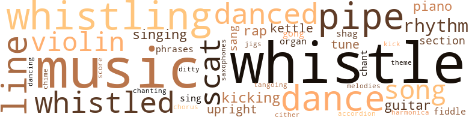
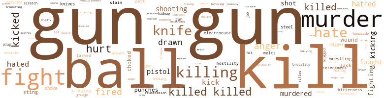

Knock on Any Door, by Motley, Willard (1947)
237 music-related terms matched in this text.
Most frequent terms in this topic: music (27); whistle (27); whistling (14); dance (13); line (11)
accordion.n.01
Definition: a portable box-shaped free-reed instrument; the reeds are made to vibrate by air from the bellows controlled by the player
| word | sentence |
|---|---|
| accordion | Inside a bunch of the neighborhood men , polacks and lugans and a big Russian with an accordion , got together week ends . |
chant.n.01
Definition: a repetitive song in which as many syllables as necessary are assigned to a single tone
| word | sentence |
|---|---|
| chant | His sad voice moans across the basement execution chamber in a mourning chant of death " Out of the deaths . |
| chants | He sometimes helped one of the mer - chants on Maxwell Street on a Saturday or Sunday all day long for a dollar . |
chime.n.01
Definition: a percussion instrument consisting of a set of tuned bells that are struck with a hammer; used as an orchestral instrument
| word | sentence |
|---|---|
| chime | Far off in the night a slow-stroked chime counted the hour . |
dance.n.01
Definition: an artistic form of nonverbal communication
| word | sentence |
|---|---|
| dance | Her big hand came down on the table , bang , making the cups dance . |
| dance | A string of sickly red bulbs crossed above the dance space . |
| dance | The boys each grabbed another boy and , outside the circle of wooden horses , went into their wild , imitative dance . |
| dance | Then a colored boy and girl did a jitterbug dance while the crowd clapped hands , keeping time with the music . |
| dance | A lean young Negro , black as the hat he wore , came out of the crowd and asked a pretty Italian girl in her teens for a dance . |
| dance | Through the wild steps of the jitterbug dance lie took her . |
| dance | The black boy escorted the Italian girl back to the fringe of the crowd , thanked her for the dance and went on his way . |
| dance | His long fingers made the cards dance under them as he shuffled . |
| dance | " Sez I - let 's dance . |
| dance | " Let 's dance . " |
dance.v.03
Definition: skip, leap, or move up and down or sideways
| word | sentence |
|---|---|
| danced | Judge Drake 's gavel danced up and down on the rostrum . |
| dance | A youth escorted a girl to the dance floor entrance and , embar - rassed , led her out to dance on the empty pavement . |
| danced | The crowd ringed a drunken Irishman who danced in the street , his hat sliding over his eyes . |
| dance | Then , for a nickel you could dance inside the ring of wooden horses . |
| danced | Only a few people danced . |
| dance | Nick took a pencil and over the trough he marked : No matter how you shake and dance The last few drops go down your pants . |
| danced | They danced little warming jigs on the icy sidewalks , pulled customers into their stores . |
| dancing | He tapped his foot against the floor to the tune of the music , loudly , banging it , almost dancing on it . |
| danced | And Ben danced around Nick , skipping out with his hands and grinning meanly . |
| danced | Next to him a girl danced with nothing on , without a strip , with - out a rag , oh boy ! |
| danced | They danced in the darkest corner , standing in one place , not lifting their feet off the floor , moving their legs in against one another . |
| danced | • Nick danced backwards slowly . |
| danced | They danced . |
ditty.n.01
Definition: a short simple song (or the words of a poem intended to be sung)
| word | sentence |
|---|---|
| ditty | An old Italian woman , fat , ditty , with a black shawl pulled over her head and shoulders , always sat on the top step saying her beads until the bell died away and mass began . |
gong.n.01
Definition: a percussion instrument consisting of a metal plate that is struck with a softheaded drumstick
| word | sentence |
|---|---|
| gong | The last sound of the ; steeple gong died and the men sat on with - out moving . |
| gong | The gong rang and chilled away in the basement . |
guitar.n.01
Definition: a stringed instrument usually having six strings; played by strumming or plucking
| word | sentence |
|---|---|
| guitar | His insides tightened like a string on a guitar ... they broke like the string on a guitar snapping . |
| guitar | His insides tightened like a string on a guitar ... they broke like the string on a guitar snapping . |
| guitar | A Mexican 's guitar twanged while a girl was laughing . |
| guitars | It was a shop where they had three balls over the door , guitars , holsters , guns , cowboy hats and jewelry in the window . |
| guitar | I play the guitar . |
harmonica.n.01
Definition: a small rectangular free-reed instrument having a row of free reeds set back in air holes and played by blowing into the desired hole
| word | sentence |
|---|---|
| harmonica | He pulled a harmonica out of his pocket " Play a mouth organ , too . |
jig.n.01
Definition: music in three-four time for dancing a jig
| word | sentence |
|---|---|
| jigs | They danced little warming jigs on the icy sidewalks , pulled customers into their stores . |
kettle.n.04
Definition: a large hemispherical brass or copper percussion instrument with a drumhead that can be tuned by adjusting the tension on it
| word | sentence |
|---|---|
| kettles | There were six fellows working in the kitchen , two on the dishes , two on the range and two on the kettles . |
| kettles | You can move up to the range and then to the kettles . |
| kettle | He walked over to where Nick was rubbing a greasy dish rag around the bottom of a big cooking kettle . |
| kettle | He raised his arm back across his face as if he were going to hit her with the dipper full of water he had gotten from the kettle . |
kick.v.04
Definition: kick a leg up
| word | sentence |
|---|---|
| Kicking | Kicking Squint in the face . |
| kick | " Did he kick you - or struggle with you or in any way endeavor to escape from cat ? " |
| kicking | They rolled over and over on the sidewalk , kicking and punching , picking up skinned elbows and knees and rips in their clothes . |
| kicking | Then after a while , walking , kicking his heels , seeing some guy without legs pushing himself along on a rollerskate framework with pads held Squint poked him in the side and said , nodding toward the back of the poolroom , '' Barney wants to see you . " |
| kicking | And lhe was glad when he could pull away and go outside feeling guilty , kicking at stones and saving , " Aw , damn it ! " |
| kicking | He stopped kicking and looked down at his hand . |
| kicking | " We ai n't got no room in that little joint where I could hide it without my old man seeing it and kicking hell out of me . |
music.n.01
Definition: an artistic form of auditory communication incorporating instrumental or vocal tones in a structured and continuous manner
| word | sentence |
|---|---|
| Music | Music filled the room . |
| Music | Music , Maestro , please ! |
| Music | Music , Maestro , please ! |
| Music | Music , piano music , came through the door with the light ; music came out on the smell of beer - St. Lou-ie woman - With her Dia-mon ' - rings ! |
| music | Music , piano music , came through the door with the light ; music came out on the smell of beer - St. Lou-ie woman - With her Dia-mon ' - rings ! |
| music | Music , piano music , came through the door with the light ; music came out on the smell of beer - St. Lou-ie woman - With her Dia-mon ' - rings ! |
| music | The piano music broke out past the door , blue and low-down . |
| music | The keys caught their rhythm up off the strings and hurled it through the back door - St. Lou-ie wo-MAN - Nick leaned with his head and shoulders slumped down against the wall and the music twisted around him . |
| music | The music twisted around him . |
| music | There was , in all the world , just the wild beating of his heart , the scared tightness of his throat and the sound of the music . |
| music | The numbness in him and the thumping of the music across his numbness - Got the St. - Lou-ie - Blues - Got the blues , got the blues , St. Louis blues - Nick moved slowly and silently toward the crack of the door . |
| music | There was music at the carnival . |
| music | The jukebox beat its drums , moaned with its saxophones , swung the music out loudly - Come on and hear , come on and hear Alexander 's rag-time band - Come on and hear , come on and hear , - It 's the best band in the land . |
| music | The music said - Come on along , come on along - Let me take you by the hand Up to the man , up to the man Who 's the leader of the band . . . . |
| music | The ridiculing boys , recognizing him , hurdled the horses , clapped their hands in time to the music , patted their feet to its rhythm , began chanting the words . |
| music | And when the sob of the music caught their ears it affected their feet . |
| music | It played hot music from the back of a truck . |
| music | Then a colored boy and girl did a jitterbug dance while the crowd clapped hands , keeping time with the music . |
| music | They swayed to the music . |
| music | There was a woman standing by a grand piano turning the pages of some sheet music . |
| music | Under the long fingers the keys went down and music came out : Brahms ' Lullaby ... Schubert 's Knight Rupert . . . . |
| music | " Do you like music , Nick ? " |
| music | Even before they went under the red neon and into the tavern , jukebox music burst out at them - He said he was glad he met herrrr And some day he would come back and get herrrr ... . |
| music | He tapped his foot against the floor to the tune of the music , loudly , banging it , almost dancing on it . |
| music | The music was noise with rhythm hidden in it somewhere under the noise - But she said " No , no , I can not go Until I know you betterrrr .... " * Outside a small crowd of men without the price of beer gawked in through the dirty window . |
| music | The music said - Ti-pi ti-pi-tin , tipi-tin , Ti-pi-ton , ti-pi-ton . |
| music | My music touches the heart strings . " |
| music | The music welled up in him , big , bursting , flowing away , trembling inside of him , breaking , leaving him empty and quivering , waiting for its return . |
| music | The music trembled in the night , broke over him like waves . |
| music | A popular orchestra sent music into the room : I 'll be loving you , always , With a love that 's true , always . |
| music | Embarrassed by the music , Nick turned back toward her . |
organ.n.05
Definition: wind instrument whose sound is produced by means of pipes arranged in sets supplied with air from a bellows and controlled from a large complex musical keyboard
| word | sentence |
|---|---|
| organs | There were beggars with sad eyes , with mouth organs , with hands held out . |
| organ | He pulled a harmonica out of his pocket " Play a mouth organ , too . |
phrase.n.02
Definition: a short musical passage
| word | sentence |
|---|---|
| phrases | He is smooth and slick as the phrases he uses in his pernicious writings . |
| phrases | Nick . . . . " Sobs burst from her between the strangling phrases . |
piano.n.01
Definition: a keyboard instrument that is played by depressing keys that cause hammers to strike tuned strings and produce sounds
| word | sentence |
|---|---|
| piano | Tonight , almost broke , he sat screwed around toward her on a chair in the tavern where she played the piano . |
| piano | There was a woman standing by a grand piano turning the pages of some sheet music . |
| piano | The young woman got up immediately , put down the big book she was looking at and went to the piano . |
| piano | They were standing by the piano . |
| piano | " Mother teaches the piano over there . " |
pipe.n.04
Definition: a tubular wind instrument
| word | sentence |
|---|---|
| pipes | Inside the basement room where Nick was , pipes ran all around the walls . |
| pipes | Nick sat on the hard basement bench with his head leaning against the water pipes and waited for the go-to-bed whistle . |
| pipe | He rubbed the back of his head against the water pipe . |
| pipe | He laughed so loud and so hard that the veins popped out on his forehead and his jugular stood out like a pipe in his neck . |
| pipe | He filled his pipe , his hard , calloused hands uncertain on the bowl . |
| pipe | Pa Romano sat behind the stove sucking on his pipe . |
| pipe | Pa sat as close as he could to the stove with a blanket around his shoulders and was poking the stem of his pipe at the baby , playing with him . |
| pipe | Pa sat in a corner with his pipe , his eyebrows tight together up above the smoke ; and every once in a while his eyes would cut from the want ads over to them . |
| pipes | Let 's go get the lead pipes ! " |
| pipes | They went to work on the water pipes , not particular about how much noise they made . |
| pipe | But they kept sawing and yanked the pipe out anyway . |
| pipe | Nick found a rag and a piece of broom handle and tried to stuff it in the pipe . |
| pipe | Vito , sawing and pounding on the lead pipe , said , '' Let it flood - you ai n't paying the water tax . ' |
| pipes | They gathered up the lead pipes and hauled them home . |
rap.n.05
Definition: genre of African-American music of the 1980s and 1990s in which rhyming lyrics are chanted to a musical accompaniment; several forms of rap have emerged
| word | sentence |
|---|---|
| rap | They stood around , drinking and talking , Nick telling them how he did the year rap standing on his head , telling it and laughing , big-shot , about it . |
| rap | " I hope he beats the rap , " Goosey said . |
| rap | Me and Morton will beat the rap ! ' |
| rap | It 's a bum rap . |
| rap | slowly , ex - pecting to see the white circle of sailor 's rap , remembering it there . |
refrain.n.01
Definition: the part of a song where a soloist is joined by a group of singers
| word | sentence |
|---|---|
| chorus | All the men , in chorus , pruned their lips and gave the rubberneck bus the razzberry - loudly , raucously . |
rhythm.n.04
Definition: the arrangement of spoken words alternating stressed and unstressed elements
| word | sentence |
|---|---|
| rhythm | Her heart contracted , expanded , in rhythm with his breathing . |
| rhythm | The keys caught their rhythm up off the strings and hurled it through the back door - St. Lou-ie wo-MAN - Nick leaned with his head and shoulders slumped down against the wall and the music twisted around him . |
| rhythm | He tapped his four lingers against his thumb in a slow rhythm . |
| rhythm | The ridiculing boys , recognizing him , hurdled the horses , clapped their hands in time to the music , patted their feet to its rhythm , began chanting the words . |
| rhythm | Tony bobbed his head up and down in rhythm with her finger . |
| rhythm | The music was noise with rhythm hidden in it somewhere under the noise - But she said " No , no , I can not go Until I know you betterrrr .... " * Outside a small crowd of men without the price of beer gawked in through the dirty window . |
sax.n.02
Definition: a single-reed woodwind with a conical bore
| word | sentence |
|---|---|
| saxophones | The jukebox beat its drums , moaned with its saxophones , swung the music out loudly - Come on and hear , come on and hear Alexander 's rag-time band - Come on and hear , come on and hear , - It 's the best band in the land . |
scat.n.01
Definition: singing jazz; the singer substitutes nonsense syllables for the words of the song and tries to sound like a musical instrument
| word | sentence |
|---|---|
| scat | They sat with their heads against the scat . |
| scats | Among others on the scats fating the stage like theatre sal the bartender from the Three-Eights Club . |
| scats | Then a bailiff instructed the first twelve men and women to take scats in the jury box . |
| scat | He said if I did n't " - Nick 's eyes fastened the jurors - " he was going to see that I got the hot scat . " |
| scat | He took his seat calmly in the electric chair - then lifted from it a trifle in a little shock of surprise at the cold touch of the leather scat . |
| scat | Nick slumped back against the scat . |
| scat | Rosemary sat away from him , almost pressed against the opposite end of the scat . |
| scat | To kiss her he had to half stand up , for her head was drawn away and pressed against the scat cushion . |
| scat | His knee was up on the toilet scat , his bare arms were around her . |
score.n.02
Definition: a written form of a musical composition; parts for different instruments appear on separate staves on large pages
| word | sentence |
|---|---|
| score | " How was the score ? " |
section.n.01
Definition: a self-contained part of a larger composition (written or musical)
| word | sentence |
|---|---|
| section | Ma looked through the little section of glass at him . |
| section | She pressed her wrinkled face as close to the section of glass and steel as she could get it . |
| section | He took a big screwdriver out from under his jacket and stuck it in under the crammed up edge of the small front section of door glass . |
shag.v.01
Definition: dance the shag
| word | sentence |
|---|---|
| shag | All that happened was lagging pennies on the sidewalk in front of the Boys ' Club , shooting craps , playing pinochle , looking through a tavern window at some drunk who was sleeping on his arms on the bar with his hat rolled off and the bartender trying to wake him up , getting a shag from a kike on Maxwell , almost having a gang fight with some niggers on Washburne , and turning garbage cans over in an alley . |
| shag | Sometimes , coming home after dark , he 'd upset flower boxes or write dirty words in chalk on the sidewalks hoping to get a shag . |
sing.v.02
Definition: produce tones with the voice
| word | sentence |
|---|---|
| singing | Going to her room he started singing her the song he knew when he was a kid on Taylor Street , " I took my Lulu to the circus to see what we could see .... " He put in all the dirty words . |
| sang | " - and - and - Squint .... " " And Squint sang ! " the detective across the table said . |
| sang | The procession that evening started from the chapel , went to the church where the choir sang : forty voices lifted and the big bell in the tower rang out . |
| sang | And some mornings he would remember his first Holy Communion , coming into the church slow and all trembly and carrying a lighted candle while the organ played and the choir sang " O Lord , I Am Not Worthy That Thou Shouldst Come to Me . " |
| sing | The man said , " When are you going to sing again ? " |
| sing | " Do you want me to sing something sentimental ? " she asked , cooing . |
singing.n.01
Definition: the act of singing vocal music
| word | sentence |
|---|---|
| singing | At dusk Nick knelt in the gold and white chapel singing the Gregorian chant . |
| singing | Pretty soon the jail was just about fiIled up with the drunks off West Madison and they started singing and raising hell . |
| singing | In front of the curtain a man in a dress suit and top hat was singing over a microphone . |
| singing | Bonnie Baker was singing - Oh Johnny ! |
song.n.01
Definition: a short musical composition with words
| word | sentence |
|---|---|
| song | Going to her room he started singing her the song he knew when he was a kid on Taylor Street , " I took my Lulu to the circus to see what we could see .... " He put in all the dirty words . |
| song | A new song had hit the juke boxes . |
| song | The song chased him out of there too . |
| song | The song followed them . |
| song | The noises were radios tuned as high as they could go , recordshop victrolas playing a few circles of a song before being switched to another , men and women shouting their wares in hoarse , rasping voices , Jewish words . |
| songs | On it he played the most wonderful songs Emma had ever heard ; songs that made her go shivery all the way up her back . |
| songs | On it he played the most wonderful songs Emma had ever heard ; songs that made her go shivery all the way up her back . |
tango.v.01
Definition: dance a tango
| word | sentence |
|---|---|
| tangoing | In the street the crap - shooters saw nothing but the black and white cubes tangoing across the dirty pavement . |
theme.n.03
Definition: (music) melodic subject of a musical composition
| word | sentence |
|---|---|
| theme | ... Mercy - Brooks told you would be my theme . " |
tone.v.01
Definition: utter monotonously and repetitively and rhythmically
| word | sentence |
|---|---|
| chanting | The ridiculing boys , recognizing him , hurdled the horses , clapped their hands in time to the music , patted their feet to its rhythm , began chanting the words . |
tune.n.01
Definition: a succession of notes forming a distinctive sequence
| word | sentence |
|---|---|
| line | A long line of cars was leaving the station , one down the line . |
| melodies | Tonight I must forget how much I need her , So Mister Leader , play your lilting melodies ... . |
| Lines | Lines of type had been pressed out by the thousands . |
| line | This same Nick Romano you see before you said this line over and over , morning after morning while he was an altar boy - ' And I go unto the altar of God : to God who giveth joy to my youth .... '" Morton shook his head no , slowly . |
| line | The jury saw nothing there but the tumble of black hair over his forehead , his lips pressed in a line , the slightest movement of a quiver at one end of them , sunlight touching the edge of his jaw . |
| line | The jury saw nothing there but the tumble of black hair over his forehead , his lips pressed in a line , the slightest movement of a quiver at one end of them , sunlight touching the edge of his jaw . |
| line | Under the trees , across the flagstones , came the long line of reform school boys in blue denim . |
| line | At intervals , on the green smooth-cropped lawn , guards stood , keeping them in line . |
| line | Nick had more on his side than Bricktop , and there were fellows in Bricktop 's line who looked as if they 'd like to he at the other end of the hill . |
| line | " We ducked out of line , " Nick said . |
| line | That night , going to bed , Jesse was n't in line . |
| tune | He was still humming a jukebox tune , softly , under his breath . |
| line | When I got the bastard to the emergency hospital he had twenty-seven stitches taken in his scalp and my revolver was bent out of line . " |
| tune | He tapped his foot against the floor to the tune of the music , loudly , banging it , almost dancing on it . |
| tune | It was almost a tune . |
| tune | When he wrote other poems for her she would hear a small tune in her head say : Lily Maid ! |
| line | " Get in line there , " the housefather told Nick . |
upright.n.02
Definition: a piano with a vertical sounding board
| word | sentence |
|---|---|
| upright | He sat upright , tensed into fear . |
| upright | All the pressure of these ten upright and honest citizens - all the pressure of Society . |
| upright | And the girls sat upright at their desks . |
| upright | He pushed against her weight and sat upright in the bed . |
violin.n.01
Definition: bowed stringed instrument that is the highest member of the violin family; this instrument has four strings and a hollow body and an unfretted fingerboard and is played with a bow
| word | sentence |
|---|---|
| violin | Her modesty cried inside of her like a string being tightened on a violin . |
| violin | As they passed the Shamrock a man came out carrying a violin case . |
| violin | They dumped him and ran through the plaza of the Daily News building with the violin . |
| violin | Nit k held out the violin . |
| violin | In the Pastime the next day Nick sat on a bench against the wall , waiting for Whitey , who was peddling the violin , to show up . |
| violin | Riley , backing Nick against the wall , shouted , " Strong-arming a guy and taking his violin away from him , that 's what ! " |
| fiddle | Uncle Fritz had a fiddle . |
| violin | That was the night Uncle Fritz came over , lugging his violin . |
| fiddle | Then , two Saturdays after Papa Jim left , Uncle Fritz came with the fiddle and the gallon of wine . |
whistle.n.01
Definition: the sound made by something moving rapidly or by steam coming out of a small aperture
| word | sentence |
|---|---|
| whistles | No sound now No whistles . |
| whistles | " Come inside the beautiful walls of the reform school with me , where he was incarcerated long months , where he was stripped of his clothes and beaten , where he obeyed a gangster rule - ate , worked , slept , rose , lived by whistles ! |
| whistles | Foreman of the jury Joseph Burke heard the whistles and locked the door of his bakery . |
| whistles | And at noon on Sundays you did n't wait for whistles . |
| whistles | . . . The reform school grounds and whistles and getting up before the sun tumbled in his mind . |
whistle.v.01
Definition: make whistling sounds
| word | sentence |
|---|---|
| whistled | Nick whistled in a long-drawn exhalation of surprise and sat down on a chair and began to fan himself with his hat . |
| whistle | The whistle screeched in a long-drawn siren howl and the forty boys got out of bed hastily . |
| whistle | In the night , far off , a train whistle blew , sending a stab into her . |
| whistling | Nick came down the alley on his way from work that evening whistling Always . |
| whistle | Nick had just started buttoning when a whistle blew . |
| whistle | The man with the soldier 's cap and the whistle was standing on a little rise of ground . |
| whistle | He blew his whistle . |
| whistle | The officer blew his whistle again . |
| whistle | Then another whistle blew somewhere else and they marched in to break - fact . |
| whistle | Then they heard a whistle . |
| whistling | I seen guys catch two hundred and fifty discredits just for whistling . |
| whistle | Nick sat on the hard basement bench with his head leaning against the water pipes and waited for the go-to-bed whistle . |
| whistle | The whistle blew . |
| whistle | A rooster opens his mouth with his head back but the sound that comes out is the sound of a whistle . |
| whistle | In the Straight up and down church the little bell sounds like a whistle between clem lied teeth ... and tall censers ... swing ... swing ... incense in long , wrapping spirals . . . swing . . . swing . . . it 's only the chunks of night and sleep coming through the bars ... a wolf howls ... an engine hoots ... . |
| whistle | " They may chain you and put water on you or - '' The whistle blew . |
| whistle | Outside a whistle blew . |
| whistle | At last the wash-up-for-supper whistle blew . |
| whistling | The whistling notes came out clear , vibrant , echoing . |
| whistling | The whistling notes went up and out . |
| whistled | With his head on one side Rocky whistled . |
| whistling | The whistling notes went up and out . |
| whistling | Then he moved away down the street , not whistling . |
| whistle | A short-blast whistle blew . |
| whistle | The drill officer blew his whistle warningly . |
| whistled | A couple of fellows whistled shrilly . |
| whistle | A whistle blew . |
| whistle | A whistle blew again . |
| whistle | Then he turned and walked under an archway back toward the command of the whistle . |
| Whistling | Whistling notes tumbled out of Rocky 's mouth , up toward the tree top . |
| whistling | The whistling strides climbed up into the tree again . |
| whistling | Aunt Rosa took Nick 's bundle of clothes from him and lugged it under her beefy aim to the curb where , whistling like a man , she made a taxi stop . |
| whistled | All the boys whistled at them or made loud wisecracks . |
| whistling | Nick put his head back , looked up at the roof of the school building and started whistling the way Rocky used to . |
| whistling | Tony started whistling by the house evenings and they 'd go to Lincoln Park to play catch or checker pool and look at the pictures in front of the shows . |
| whistled | Once , when Tony whistled by and Nick went out to the porch , Ma 's voice came from the lighted window telling him to bring his friend in . |
| whistled | One evening Tony whistled by the house , low , hoping Nick 's folks would n't hear . |
| whistle | If anybody comes , whistle and run for it . " |
| whistle | Twice he started to whistle . |
| whistling | The little boy came whistling down the sidewalk headed toward West Madison . |
| whistled | He whistled . |
| whistled | In the bathroom Nick splashed in the water and whistled loudly . |
| whistle | The whistle sounded . |
| whistling | He put on his jacket , stood whistling unconcerned as he stared at himself in the mirror and fixed his hat on the way he liked it . |
| whistled | He whistled sharply , single notes , signalling his good luck . |
| whistling | Out - side she could hear Leo whistling . |
| whistle | He had n't heard the get-up whistle . |
| whistle | A whistle , outside the building , blew in a command . |
| whistle | Then he 'd open the door and say , " If I let you out will you be good kids and come right in when I whistle ? " |
| whistling | When she walked along the street and young fellows turned around looking at her and whistling at her , she always pretended that she did n't know what they meant . |
| whistle | In front of them stood an officer with a whistle clenched be - tween his teeth . |
zither.n.01
Definition: a musical stringed instrument with strings stretched over a flat sounding board; it is laid flat and played with a plectrum and with fingers
| word | sentence |
|---|---|
| cither | Julian could n't find work cither but he went out all day long looking . |
711 violence-related terms matched in this text.
Most frequent terms in this topic: gun (97); killed (64); kill (39); ball (28); murder (26)
abrasion.n.01
Definition: an abraded area where the skin is torn or worn off
| word | sentence |
|---|---|
| scratch | When Nick got to the top of the steps Porkchop was whining and scratch - ing at the boards in front of the door . |
| scratch | " Just a scratch ! " |
anger.n.01
Definition: a strong emotion; a feeling that is oriented toward some real or supposed grievance
| word | sentence |
|---|---|
| anger | Nick 's eyes snapped to anger . |
| anger | He sobbed in fear and anger and impotence . |
| anger | There was righteous anger in his voice . |
| anger | Morton sat up and then leaned toward Nick with his elbows on the arms of the chair and his gray eyes showing anger . |
| anger | The Kid flared with temporary anger . |
| anger | Morton said , his voice quivering with anger . |
| anger | A stir of movement and of anger went across the courtroom . |
| anger | Paying no attention , his voice coming back from anger to reasoning , he said , " With all the power of the State , with unlimited money , with thousands of officers , there has not been brought to you any uncontradicted evidence that would tend to connect Nick Romano with this crime . |
| anger | He thinks so - or he would n't have said it ... your objection - did you make an objection , Mr. Kerman , or did you just burst out in anger ? " |
| anger | " Counsel for the defendant vio - fated e.ery element of courtesy and clean practice when he applied to me the epithet ed a " - his voice quivered with anger - " scavenger . |
| anger | Nick in the center of them like an animal caged , his anger , his hate worn out . |
| Anger | Anger lose suddenly in him . |
| anger | She blew anger and contempt through her nose . |
| anger | His old eyes leaped to the back of the room and his lumpy nose twitched with anger . |
| anger | His voice shook with anger . |
| anger | Her lips curled back in anger . |
animosity.n.01
Definition: a feeling of ill will arousing active hostility
| word | sentence |
|---|---|
| animosity | Rut remember this - neither of them evinced any feeling of animosity toward the defendant - the Pretty Boy " - Ker - man pointed at Nick with his red pencil , jabbing - " who had been their associate and pal fot at least five years prior to the commission of this murder . |
blast.v.03
Definition: use explosives on
| word | sentence |
|---|---|
| shelled | She whined about it but she shelled out to him whenever she had it . |
bump.n.01
Definition: a lump on the body caused by a blow
| word | sentence |
|---|---|
| bumps | Then a Jewish girl in a high school sweater with bumps and her skinny partner in loud-colored trousers and glasses took over . |
crucify.v.01
Definition: kill by nailing onto a cross
| word | sentence |
|---|---|
| crucify | - but to crucify this youth whom the State , the newspapers and the police have decided must die ! |
cut.n.05
Definition: a wound made by cutting
| word | sentence |
|---|---|
| gash | The black gash of hair fell over his forehead . |
dagger.n.01
Definition: a short knife with a pointed blade used for piercing or stabbing
| word | sentence |
|---|---|
| dagger | Morton swung around in his chair and stabbed his finger at Ker - man as if it were a dagger . |
| daggers | Long , sharp-bladed knives , like daggers , four and five inches long . |
| dagger | Shadows were heavy all about him and sometimes a lighted doorway threw its sharp dagger of light . |
desecrate.v.01
Definition: violate the sacred character of a place or language
| word | sentence |
|---|---|
| desecrated | And if you were to do this , then justice would be ravaged , statutes desecrated and your oaths forgotten ... The jurors ' eyes became more solemn with his words . |
destroy.v.04
Definition: put (an animal) to death
| word | sentence |
|---|---|
| destroy | " The Lord has said he would destroy his enemies . " |
draw.v.23
Definition: pull (a person) apart with four horses tied to his extremities, so as to execute him
| word | sentence |
|---|---|
| drawn | They 'd yell and shout and curse and tell dirty jokes out there in Butch 's car drawn up to the curb in front of the Pastime . |
| drawing | An El train passed overhead , slowing , throwing sparks , drawing up to the platform . |
| drawn | The squad car was drawn up next to them with three cops jump - ing out with drawn guns levelled at their heads . |
| drawn | He sat silent and scared , with his knees drawn up close to his chin and his shoulders pressed against the plaster-crumbling wall . |
| drawn | Pa 's face was drawn up and more stern-looking than Nick had ever seen it . |
| draw | He is not left alone in these , the last utterly miserable hours of his life , to pray , to cry , to draw into himself or to strengthen himself for what waits when the bars are lifted from around the cage . |
| drawn | Rosemary sat in the dark room with her chair drawn up to the window . |
| drawn | Grant looked at the sagged-down shoulders in the blue denim shirt , at the legs drawn up and the workshocs pressing against the grass , cutting black wounds in the lawn . |
| drawn | They sat with their knees drawn up tight under their chins . |
| drawn | Julian lay in the bed sleeping , his legs drawn up toward his stomach . |
| drawn | One of the end tables was drawn up in front of the sofa . |
| drawn | He sat a long time on the ground out - side the cabin with his knees drawn up to his chin , smoking . |
| drawn | Glancing toward the parlor he saw Ang 's legs in sheer silk stockings drawn up gracefully against the sofa base , calves touching , heels against the rug . |
| drawn | Nick sat with his knees drawn up to his chin and his face concealed in the circle of his arms . |
duel.v.01
Definition: fight a duel, as over one's honor or a woman
| word | sentence |
|---|---|
| duelled | Kerman and Morton duelled throughout the afternoon . |
electrocute.v.02
Definition: kill by electrocution, as in the electric chair
| word | sentence |
|---|---|
| electrocute | You saw his happiness in what he fondly believed was the attainment of his determination to electrocute the defendant . |
| electrocute | " Well - ah - " the new crime reporter said , " tell me something about the setup here when you electrocute a man . " |
| electrocute | " Well , " the warden said , pausing and shaking his head sadly , " we do n't enjoy having to electrocute a man . |
envy.n.01
Definition: a feeling of grudging admiration and desire to have something that is possessed by another
| word | sentence |
|---|---|
| envy | For almost the first time in his life , he felt neither envy nor contempt for his brother . |
ferociousness.n.01
Definition: the trait of extreme cruelty
| word | sentence |
|---|---|
| viciousness | And he grew frightened when he saw Morton 's dead earnestness and Kerman 's cold viciousness . |
| brutality | Your police will say that brutality is never practiced but your own witness has testified that it was - on him ! " |
| brutality | We are full of brutality and hate . |
fight.n.02
Definition: the act of fighting; any contest or struggle
| word | sentence |
|---|---|
| fighting | Some restlessness in him sent him around the street jackrolling and fighting and getting into drunken brawls . |
| fighting | It was pretty mean fighting . |
fight.n.05
Definition: a boxing or wrestling match
| word | sentence |
|---|---|
| fight | Nick , hunched tensely in his seat , sensed the tooth-and-nail fight for his life . |
| fight | A venal press would be an excres - cence upon the body politic - but a pure - loyal - unafraid press is the strongest aid that the law enforcement agencies of the country possess in their fight against crime and vice . |
| fight | He 'd just talked himself into a fight . |
| fight | Anything to stop the fight . |
| fight | Even after Nick saw him do that he was still hoping somebody would stop the fight . |
| fight | And that 's where the fight ended . |
| fight | When Nick could spread his thinking away from his fight with Bricktop and the little kids getting beaten , he told Rocky the one thing he had on his chest . |
| fight | He did n't give a goddamn after the fight . |
| fights | And sometimes they had fights right in the middle of the aisle with Sister trying to sep - arate them . |
| fight | Down one street there was a fight . |
| fight | It was a good fight while it lasted . |
| fight | It was a pretty good fight but Vito , getting scared , quit after he had pasted her a couple , and she pulled him all the way down to the office by his tie . |
| fight | All that happened was lagging pennies on the sidewalk in front of the Boys ' Club , shooting craps , playing pinochle , looking through a tavern window at some drunk who was sleeping on his arms on the bar with his hat rolled off and the bartender trying to wake him up , getting a shag from a kike on Maxwell , almost having a gang fight with some niggers on Washburne , and turning garbage cans over in an alley . |
| fights | There were a couple of fights but • From Ti-Pi-Tin , by Maria Grever and Raymond Leveen . |
| fight | " Let that new guy fight , " one of the inmates said , pointing . |
| fights | Them friggin ' guards like to see fights all the time . |
fight.v.02
Definition: fight against or resist strongly
| word | sentence |
|---|---|
| fought | He twisted the burners off He fought for his breath and ran back into the bed - room . |
| fighting | He pulled hard , panting , fighting to free his feet . |
| fight | " He can fight anybody in here . |
| fight | If you want to be champ you challenge the guy who is and fight him on the hill behind the dormitories . |
| Fight | " Fight the case , " Grant said , " as if he were . " |
| fought | They fought with their wits and brains . |
| fighting | Kerman viciously ; Morton quietly , taking care to give no one in the court - room , least of all the jurors , the idea that he was strenuously fighting Kerman on every issue , all the way . |
| fight | Grant pulled his tie loose a little - almost with the same gesture with which a man takes off his coat to fight . |
| fighting | You will be fighting for your life every minute that you 're on the witness stand and Kerman will try everything in his power to convict you .... " Again Morton sighed and put his hand on Nick 's shoulder . |
| fought | He tightened his teeth , hard , hard as he could and fought against the scared and helpless tears that filled his eves . |
| fight | Jesse , walking with Nick , said , " Bricktop do n't like him because he ca n't fight him . " |
| fought | Nick fought the tears . |
| fought | The devil must be fought with fire . |
| fought | Tommy fought back . |
| fighting | There was no fighting back now and he knew it . |
| fight | Yeah , he was going to fight Bricktop . |
| fighting | Nick did n't know much about fighting but he knew enough , to keep away from Bricktop . |
| fighting | They were fighting again . |
| fight | Nick , in a haze that had a circle of fists spinning around his head like cartwheels , started to fight back . |
| fight | Nick had it in his mind to fight . |
| fought | Under the now deserted Maxwell stands the cats fought their lights . |
| fight | He thought maybe Tony would even want to fight him . |
| fight | In the adolescent home you can fight any time . |
| fight | He did n't want to fight . |
| fought | She screamed and wiggled , fought her way out of Mommy 's arms , ran to the outdoors . |
flog.v.01
Definition: beat severely with a whip or rod
| word | sentence |
|---|---|
| lather | I 'd lather sit here , Nicky . " |
| lathering | Nick stood at the washbasin in bis undershirt , roughly lathering his face with his hands . |
frustration.n.03
Definition: a feeling of annoyance at being hindered or criticized
| word | sentence |
|---|---|
| frustration | Emotion and frustration rasped against her , ground her . |
| frustrations | He thought , in that moment , of all the loves and losses , the twisted and natural longings and frustrations of the world . |
gag.v.06
Definition: cause to retch or choke
| word | sentence |
|---|---|
| choked | With his face buried against her hair and her neck , Nick choked and did n't answer . |
| choking | It was up in his throat , beating against his Adam 's apple , choking him . |
| choked | The raw , cutting air in his lungs choked him . |
| choked | The fear and the panic choked in his throat . |
| choke | He felt he could n't choke a scrap down . |
| choke | His keys stuck together , struck so loudly against Nick 's ears that he could feel a scream rise in his throat and choke there . |
| choking | The lever pulled the snaps even c loser , choking him , almost suffocating him , pressing now into the flesh and leaving welts , sending the blood pouring up into his dark face and pounding against his temples . |
| choke | It made him choke and cough ; his nose ran . |
| choked | He choked . |
| choked | He swallowed and choked and swallowed . |
| choked | The tears and the choked , whim - pering sobbing became less . |
| choke | Watching her ^ he felt himself choke . |
gat.n.01
Definition: a gangster's pistol
| word | sentence |
|---|---|
| gat | When he had been in town a few weeks he took Nick up there and showed him a gat . |
| gat | Riley was talking through his nose to Big Tim , " With that he rushes me and my gat comes down on his head , sort of sideways . |
grudge.n.01
Definition: a resentment strong enough to justify retaliation
| word | sentence |
|---|---|
| grudge | Then Morton let the question go : " What grudge did you have against Rilev ? " |
| grudge | At last he said , " Suppose I did have a grudge against him - would that mean I killed him ? " |
gun.n.01
Definition: a weapon that discharges a missile at high velocity (especially from a metal tube or barrel)
| word | sentence |
|---|---|
| gun | He did n't look at it but instead got the old gun from its hiding place and went down to the car . |
| gun | In his pocket his hand was on his gun . |
| gun | Vito walked up to the ticket taker and , shielding his gun from the street entrance with his back and shoulders , pointed it into the oval in the iron grill . |
| gun | " I ai n't got my gun . " |
| gun | Then Vito went quickly to the door leading into the cage , threw it open and levelled his gun at the ticket taker . |
| gun | The ticket taker knelt down at Nick 's feet and Vito had the gun against his skull . |
| guns | The squad car was drawn up next to them with three cops jump - ing out with drawn guns levelled at their heads . |
| gun | Vito was trying to get his gun out of his pocket . |
| gun | I handled the money and handled the gun . |
| gun | Back at his mother 's house he went to the bedroom , set the boots on the floor , dug down into one of them and got the gun . |
| gun | When the man turned around with the cigarettes , the gun was already levelled at his heart . |
| gun | He looked at the black barrel of the gun and then up into Nick 's eyes . |
| gun | The gun barrel was a stiffly-held , unwavering threat pointed straight at the bartender 's heart . |
| gun | Quietly he backed to the door , the gun still pointing . |
| gun | Swiftly Nick dropped his hand to his side and pushed the gun out of sight . |
| gun | Riley wrestling with his gun , getting it out of the holster , shooting at Nick even before he had the gun levelled The report . |
| gun | Riley wrestling with his gun , getting it out of the holster , shooting at Nick even before he had the gun levelled The report . |
| gun | The bartender running out of the Three-Eighty with a gun in his hand . |
| gun | Again the report of Riley 's gun . |
| gun | Wildly Nick lifted his gun over his shoul - der , and without looking , wildly fired it , once , twice , three times . |
| gun | In the other hand the gun struck the mud and garbage . |
| gun | Quickly he broke the gun . |
| gun | No weight of the gun . |
| gun | Nick transferred the gun into his left hand , holding his right hand on top of his left . |
| gun | The gun went lopsided . |
| gun | Holding the gun in both hands he pointed it out of the dark . |
| gun | Hanging against the panel of the poolroom door he changed the gun back to his right hand . |
| gun | He clenched the gun . |
| gun | Before he could fire , Riley shot at him - once - twice - and came running , lumbering toward Nick with the gun held for the kill . |
| gun | He stood in the alley with the Maxwell Street hockshop gun steady now , in his hand . |
| gun | Nick pointed the gun down and emptied it into Riley . |
| gun | He had the gun pointed down and kept pulling the trigger . |
| gun | He heard the empty clicking of the gun . |
| gun | He took the gun and threw it in Riley 's face . |
| gun | - There 's a gun here ! " |
| gun | A large hand , holding a handkerchief , wrapping carefully around the gun and lifting it out of the mud and water near Riley 's ripped - open skull . |
| gun | Under his eyelids he saw Riley 's gray , blood soaked face and he saw himself throwing the gun down at the ugly , hateful face . |
| gun | I should n't of thrown my gun away . |
| gun | Ace stood there with a gun in his hand . |
| gun | " Ca n't you let me have a gun , Ace ? |
| gun | All Nick could see were Ace 's big teeth , white in the dark , and the gun held casually at his side . |
| guns | They came with their guns drawn . |
| guns | They stuck their guns in his ribs . |
| gun | The detective on the other side of the desk asked , " Ever have a gun that came out of a hockshop on Maxwell Street ? " |
| gun | All he could see was himself in the alley emptying the gun into Riley , throwing it at Riley , kicking him . |
| gun | EDITORIAL ... Almost six mouths ago a killer stood in an alley behind West Madison Street with a flaming gun and murdered a police officer . |
| gun | " We will prove that his was the hand that held the gun ! |
| gun | He reached into the grip and pulled out the gun . |
| gun | Most of their eyes were coming from the gun to him ; then all of their eyes were on him . |
| gun | " I now show you Exhibit C. " Kerman broke the gun and looked inside ; he said , " This is a thirty-two Colt revolver numbered 769722 on the barrel and under the handle . " |
| gun | He handed the gun across the rail of the witness box . |
| gun | " Is this the gun from which the bullets I showed you a moment ago were fired ? " |
| gun | " I found the gun . " |
| gun | " This gun here - Exhibit C ? " |
| gun | When he went out of the pawnshop he carried a pack - age - The hockshop gun was on the counsel table . |
| gun | " I show you a gun , Exhibit C . |
| gun | Have you ever seen this gun before ? " |
| gun | " Please speak your answers , Mr. Mann , " Kerman said ; and again , " Have you seen this gun before ? " |
| gun | " Did you sell this gun to the defendant here or to anyone else ? " |
| gun | " How did the gun manage to leave your shop ? " |
| gun | " How long ago , Mr. Mann , was the gun stolen ? " |
| gun | That 's the same gun ? |
| guns | I had newer guns on display . |
| gun | " In other words you had n't positively seen this gun for nine years until the police traced it to you . |
| gun | " Officer , you had a gun , a blackjack and handcuffs ? " |
| gun | But I saw the fellow who shot Riley leaning over him with the gun pointed right in his face blasting away . " |
| guns | " I want it to go down in the annals of our city that Ker - man prosecutes the killers in the name of the poor fellows who die at the ends of their guns . |
| gun | The killer held a gun - " Morton , facing the witness , illustrated . |
| gun | " Pardon - " Kerman said sarcastically , " do you want the gun ? " |
| gun | " I 'll take that gun now ! " he said angrily and jerked it out of Kerman 's hand . |
| gun | " The killer was crouched over with the gun in his hand . |
| gun | Morton was crouching over the imaginary Riley with his foot lifted , the gun pointed down . |
| gun | He raised up to his full height , suddenly , and folded his arms with the gun still held in one hand . |
| gun | " Which hand did the killer have the gun in ? " he shouted . |
| gun | He walked to the counsel table and banged the gun down . |
| gun | . . . Whatever you do , Nick , do n't touch that gun ! |
| gun | Kerman is going to shove it at you and ask you if that is n't the gun you killed Riley with . |
| gun | They always take the gun . |
| gun | They relive it when they have the gun in their hands . |
| gun | Do n't touch that gun ! |
| gun | He snatched the gun from it and walked to the wit - ness stand with it . |
| gun | " This is the gun you killed Riley with , is n't it ? |
| gun | He pushed the gun out to Nick . |
| gun | " Did n't you stand over him in the alley and kill him with this gun ? |
| gun | Nick looked up from the gun in the palm of Kerman 's hand to Morton . |
| gun | His eyes moved back down to the gun , black and deadly looking in the palm of Kerman 's hand . |
| gun | Nick held the gun in his hand , looking down at it with some of his hair spilling over his forehead . |
| gun | The jurors all looked at the downheld and curly head , at the gun and the eyes looking down at it . |
| gun | Nick turned the gun over , looking at the other side of it . |
| gun | Nick was holding the gun upside down with one finger , balancing it by the trigger guard . |
| gun | Kerman had slapped the gun down on the counsel table and walked back to the witness stand . |
| gun | Who but the panhandlers , the jack - rollers , the strong-arm nun , the vagrants , the denizens of Skid Row - could have seen this handsome slayer emerge from the alley after throwing the murder gun in the face of his victim ? |
| gun | police taking bribes ... beating in heads , making the law ... greatest percentage of relief , prostitution , unwed mothers , criminality , syphilis , juvenile delin - quents , poverty ... right here , in this pockmark , this hollow , this district . . . man with a gun , boy with a gun . |
| gun | police taking bribes ... beating in heads , making the law ... greatest percentage of relief , prostitution , unwed mothers , criminality , syphilis , juvenile delin - quents , poverty ... right here , in this pockmark , this hollow , this district . . . man with a gun , boy with a gun . |
| gun | A big cop pulled out his gun and pointed it at him . |
| gun | seeing Vito , the big guy of the bunch , pulled his gun out light away and put it on hint . |
| gun | Vito pushed his chauffeur 's cap back off his forehead and told Nick in an undertone , " I 'm going to get a gun from a guy I know . " |
| gun | Vito said , " I 'm going to get a gun from Hank . " |
| guns | It was a shop where they had three balls over the door , guitars , holsters , guns , cowboy hats and jewelry in the window . |
| gun | Nick enjoyed carrying a gun and shooting at things . |
| gun | When he went out on a job after that he wore the jockstrap and stuck the gun down inside of it , in front . |
| gun | He stuck his hand down in one of them and pulled out the gun he had bought from the fence on Maxwell Street . |
| gun | The policeman , seesawing his gun back and forth , staggered toward the group . |
hate.n.01
Definition: the emotion of intense dislike; a feeling of dislike so strong that it demands action
| word | sentence |
|---|---|
| hate | With hate . |
| hate | They see nothing but meanness and hate in life . |
| hate | Riley 's eyes were hard with hate . |
| hate | The hate was freezing out of them . |
| hatred | They say this shows an absolute hatred and desire for vengeance on the part of the killer . |
| hate | Their hate met . |
| hatred | Morton stood looking through the hatred window with his hack to Nick . |
| hatred | The motive is shown by his hatred of all police and in his endeavor to escape arrest for robbery two nights prior to his apprehension . |
| hate | We are full of brutality and hate . |
| hatred | " Now we come to Squint , whose hatred for the defendant was manifested throughout all his testimony Squint - actuated only by motives of public policy and a desire to see the perpetrator of the crime pay the penalty for his misdeed - spent two days in prayer and contemplation as to what he should do and made up his mind to volunteer his testimony after he had read of the reward to be pa id for the killer of the cop . |
| hate | Nick in the center of them like an animal caged , his anger , his hate worn out . |
| hatred | He 'd sit on his stool on the other side of the hatred door smoking . |
| hatred | And if accidentally their glances met , they saw eyes flared with hatred . |
| hatred | He had to force himself to walk to the hatred door . |
| hatred | The hatred door opened . |
| hate | Just his eyes flaring with hate and defiance ; just the twist of a hard smile on his lips . |
| hate | Afterwards Nick staggered up the low bank of lawn and lay there , face down , tasting blood and sweat and hate . |
| hate | Nick fastened his teeth ; and he fastened his mind in a knot of hate . |
| hate | And the hate passed into him , beyond the moment , beyond the surface of his mind . |
| hate | All the time he stated hate at his father , the hate of enemy for enemy , daring him with his eyes to start again . |
| hate | All the time he stated hate at his father , the hate of enemy for enemy , daring him with his eyes to start again . |
| hate | Nick staggered back , bent over he looked up at Riley 's six feet two inches through eyes that smouldered in pain and hate . |
| hatred | There was a sultry defiance in his eyes , grim hatred in the straight-line tightness of his mouth , he sat on the curbstone transferring snipe tobacco into a cigarette paper . |
hate.v.01
Definition: dislike intensely; feel antipathy or aversion towards
| word | sentence |
|---|---|
| hate | I hate him ! |
| hate | I hate him ! |
| hate | I hate you ! |
| hate | I hate you ! " she sobbed dryly , too miserable for tears . |
| hated | He felt like bawling ; and with the tears inside of him he was angry at himself , hated himself . |
| hated | " You hated Riley , did n't you ? " |
| hated | Morton 's voice said , calmly , " Mr. Kerman asked him if he hated Riley . |
| hated | '' In that country this animal , this scavenger of the plains , is hated by all people . |
| hated | and hated ! |
| hated | and counted 1 and hated ! |
| hated | He hated them . |
| hated | He hated the law and everything that had anything to do with it . |
| hate | " I hate it ! |
| hated | He hated to have her coming out here . |
| hated | Christ , how he hated that ! |
| hated | The next week end Nick went to the Long Bar alone because Juan was n't around and because Butch hated the phoneys and beat them up every time he got a chance . |
| hate | I hate it here . |
| hating | It came , he clumped back against the grillwork of the cage , clenching his teeth , hating cops , goddamn it ! |
| Hating | Hating them . |
| hates | He hates me . |
| hate | Please do n't hate me too much . |
| hate | Ask them not to hate me . |
| hate | Emma stayed on the job even though she began to hate it . |
homicide.n.01
Definition: the killing of a human being by another human being
| word | sentence |
|---|---|
| homicide | Flash of bulbs as the homicide photographer carefully and unhur - riedly took photos from differcnt angles for position of the body , distance from the wall , path the killer had taken . |
| homicide | Men from the homicide squad stooping in the slow drizzle with measuring tapes between their fingers . |
hostility.n.01
Definition: a hostile (very unfriendly) disposition
| word | sentence |
|---|---|
| hostility | All of them looked at Nick , silently and searchingly , with hostility . |
| hostility | Then his face set itself in its mask once again and cooled to hostility . |
| hostility | The hostility relaxed in the onlookers ' eyes . |
hurt.v.04
Definition: cause damage or affect negatively
| word | sentence |
|---|---|
| hurt | She boarded a streetcar and sat in the back seat with her face away from people but hurt so badly that she did n't care if they saw or what they thought . |
immolation.n.01
Definition: killing or offering as a sacrifice
| word | sentence |
|---|---|
| immolation | Not aided alone - but made - from the stories of the police , the moulders of public opinion , the public prints have from the day of the arrest of Nick Romano screeched with acid voices for his immolation . |
indignation.n.01
Definition: a feeling of righteous anger
| word | sentence |
|---|---|
| outrages | . . . I e st someone may cone hide that I accuse counsel of participating in the overt acts of his clients I want to make it plain that I do not mean that he actually participated in the commission of the outrages but - I do mean - that he has shared in the profitts from those damnable excursions of the underworId ... ! " |
injury.n.01
Definition: any physical damage to the body caused by violence or accident or fracture etc.
| word | sentence |
|---|---|
| hurt | She had feelings - but they went away with the shock and hurt - a sharp pain - then numbness . |
| hurt | Their waiter watched the fogging and grinned , blowing little snick - ers of laughter through his nose as he stared at Nick 's empty plate and his hurt and bewildered eyes . |
| hurt | At night you were alone in the dark dormitory , stretched out on the hard bed , letting the hurt and the madness soak out of you , with just the loneliness closing in around you from all over the room , before it was light you got up with the siren scaring you out of your sleep . |
| harm | And she held him with the firm protectiveness of one holding a child from harm . |
| hurt | But his lips tightened and , through the hurt , they grinned faintly , sardonically . |
| hurt | Nick hunched up next to Don , feeling the shock and hurt inside himself . |
| hurt | Pa 's eyes stared at Gene Mack with hurt and shame , asking him an answer . |
| hurt | Her voice was angry but her eyes were funny-like - sad and hurt . |
| hurt | Emma sat across the room from her , sharing her hurt and her sorrow . |
| hurt | He had his head in his hands like a hurt little boy . |
| hurt | He felt small and hurt and like a little boy inside . |
jab.n.02
Definition: a quick short straight punch
| word | sentence |
|---|---|
| jab | Nick felt a jab of pain in the pit of his stomach . |
| jabs | setting his elbow off into paralyzing jabs of pain . |
jealousy.n.01
Definition: a feeling of jealous envy (especially of a rival)
| word | sentence |
|---|---|
| jealousy | A hot flash of jealousy leaped up in Nick and he trotted alter them , shouting , " Hey ! |
kick.v.04
Definition: kick a leg up
| word | sentence |
|---|---|
| Kicking | Kicking Squint in the face . |
| kick | " Did he kick you - or struggle with you or in any way endeavor to escape from cat ? " |
| kicking | They rolled over and over on the sidewalk , kicking and punching , picking up skinned elbows and knees and rips in their clothes . |
| kicking | Then after a while , walking , kicking his heels , seeing some guy without legs pushing himself along on a rollerskate framework with pads held Squint poked him in the side and said , nodding toward the back of the poolroom , '' Barney wants to see you . " |
| kicking | And lhe was glad when he could pull away and go outside feeling guilty , kicking at stones and saving , " Aw , damn it ! " |
| kicking | He stopped kicking and looked down at his hand . |
| kicking | " We ai n't got no room in that little joint where I could hide it without my old man seeing it and kicking hell out of me . |
kick_back.v.02
Definition: spring back, as from a forceful thrust
| word | sentence |
|---|---|
| kicked | Nick kicked his shovel away from him and walked over to the foreman , stamping his feet heavily . |
| kicked | A husky guy kicked the door open and came into the basement . |
| kicked | He put his arm up on Vito 's shoulder and again they relived the schools they had been kicked out of , the broads behind St. Francis ' , the jack - rolling . |
| kick | Guys who do n't kick in get all their stuff taken away from them . |
| kick | " If you was a man I 'd kick the hell out of you , " he said and walked out , slamming the door . |
| kicked | He lifted his foot and kicked Riley . |
| kicked | He remembered how Riley had kicked him when he was down on his hands and knees in the basement of the police station . |
| kicked | He kicked Riley , hard , in the stomach . |
| kicking | All he could see was himself in the alley emptying the gun into Riley , throwing it at Riley , kicking him . |
| kicked | Whoever shot Riley did n't stop there , for after he was dead his face was kicked in . |
| kicked | The killer stood over the dead body of the policeman and kicked him until the face was almost unrecognizable , in one of the most brutal and callous murders in the annals of criminal history in the City of Chicago . |
| kicked | " Not satisfied with murder , we will show you beyond a reasonable doubt that this fiend then brutally kicked the defender of civic security in the face and body ! " |
| kick | When the courtroom was again quiet Morton asked the witness with his face turned away from Judge Drake , " Did you ever kick any prisoner ? " |
| kicked | And when there were small stones in the road Rocky gently kicked them out of the way . |
| kicked | " - And the little fat copper slapped me and kicked me in the stomach , " Juan said . |
| kicked | " The first two times they beat me with rubber hoses and kicked me . " |
| kick | " With which foot did he kick ? " |
| kicked | Then - you recall - that on my cross-examina - tion he stated that the police had first offered him money , then beaten and kicked him , and finally forced him to sign a false state - ment ; that Kerman visited him the night before he went on the stand and read his testimony to him . |
| kicking | That did n't stop them from beating him , kicking him , knocking him senseless several times , stripping his clothes off and twisting his testicles ! " |
| kicked | I 'm Nick Romano , I 'm Nick Romano , a Iittle voice inside of him whimpered , went on whimpering like a kicked dog . |
| kicked | When he lay unconscious at their feet they kicked him a couple of times . |
| kick | Yeah , but he 's going to kick my can through . |
| kick | He knew that made Bricktop mad , made him want to kick the crap out of him all the more . |
| kicked | Nick kicked the soles of his shoes against the lawn . |
| kicked | They kicked their toes against the street . |
| kicked | The two women kicked their heels against the stand . |
| kicks | When they were expelled Pa beat Nick , adding a couple of kicks in the rear end , and enrolled him in a neighborhood grammar school . |
| kicks | With kicks . |
| kicked | He kicked at the sidewalk . |
| kicking | Today they sat on the porch boards kicking the soles of their shoes against the knots of stubborn grass and looking over the pages of their little black book . |
| kick | There was n't enough on the ground to kick your feet in . |
| kicked | Nick kicked him in the face . |
| kick | Yeah , and I 'll have to kick in with some money . |
kidnap.v.01
Definition: take away to an undisclosed location against their will and usually in order to extract a ransom
| word | sentence |
|---|---|
| kidnap | " In other words , Captain , you policemen can loosely kidnap or falsely attest any citizen you want and unlawfully imprison hint and hold him incommunicado for at least three days ? " |
| kidnap | He kept pestering her ; kept saying , " Aw , please ! " and " I 'm going to kidnap you ! |
kill.v.10
Definition: cause the death of, without intention
| word | sentence |
|---|---|
| killed | I killed you , I killed you ... . |
| killed | I killed you , I killed you ... . |
| killed | I did it , Emma , I killed you . |
| kill | Nick said , " What do you want to do , kill me ? " and got up . |
| killed | Nick 's mind flooded with one thought : he killed three men . |
| kill | You know Ma - that would kill her . |
| kill | It 's Riley and he 's going to kill me ! |
| kill | He wants to kill me ! |
| killed | He 's killed three men ! |
| kill | If she tries to turn me in I 'll kill her ! |
| Kill | Kill her ! |
| Kill | Kill her ! |
| Kill | Kill the bitch ! |
| kill | And I had to kill a guy to get it . |
| killed | " You killed Riley - did n't you ? " |
| kill | I did n't kill nobody , SEE ! " |
| killed | " You know Riley 's been killed . " |
| killed | " Riley was killed Saturday night , " the detective said . |
| kill | You got ta kill me first ! |
| kill | You got ta kill me first ! |
| killed | They coulda killed me and I would n't of talked ! " |
| killed | " Where were you the night Riley was killed ? " |
| killed | At last he said , " Suppose I did have a grudge against him - would that mean I killed him ? " |
| kill | That 's why I asked you if Riley had ever done anything to you that would make you want to kill him . |
| killed | " A policeman was killed , was n't he ? " |
| killed | All the fellows , the ones who knew Nick had killed Riley and that Sunshine had seen him do it , and the ones who did n't know stood with their mouths open . |
| kill | He did n't kill nobody , honest , he did n't kill nobody . " |
| kill | He did n't kill nobody , honest , he did n't kill nobody . " |
| killed | " You might as well know , Grant , " Mor - ton said , " Nick killed Riley all right . " |
| killed | I hey always yell for venge - ance when a policeman is killed . |
| kill | The young for the young , the young wo n't kill the young . |
| killed | " When he - " her lips trembled , " left me that night when he - when he was killed . " |
| killing | And Morton continued in a loud voice , " You do n't remember me - but - to refresh your memory do you recall my men - tioning this killing to you ? " |
| killed | " Now then , as a matter of fact , did n't you tell him in the squad tar , ' You killed Riley , you bastard ! ' |
| killed | " Butt he killed three people who shot at him ? |
| kill | When did he kill the second man ? |
| killed | " And now the first man he killed ? " |
| killed | Captain , that Time Notch Riley killed three men , he was very proud of his feat , was he not ? " |
| killed | " That he killed Riley . " |
| killed | " Mr. Jingolsky , did n't the defendant give you twenty-live cents for a bed on the night Officer Riley was killed ? " |
| kill | " What I wanted to prove and what the witness has proved for me is that he has no conception of time - that he did n't see any shooting - he does n't know who did the shooting and he does n't know how long it took to kill this unfortunate officer . " |
| killed | I do n't think anybody should be killed . " |
| killed | " I saw it though , and l thought it over for a couple of days and then I thought about that poor woman and her kids and how this fellow had killed a man after robbin ' the tavern and I just could n't stand it , so I went to the police and told them what I seen . " |
| killed | " Tell us if you saw him the night Officer Riley was killed . " |
| killed | " Were you standing at the end of the alley on Atlantic Avenue and West Madison at a little after twelve o'clock the night Officer Riley was killed ? " |
| kill | " I remember that the police picked me up and took me over to the station and beat me up and threatened to kill me if I did n't say I saw Nick coming out of the alley - ! " |
| kill | ... I read to you what you said at that time . . . . ' Yes , I saw Mick Romano kill Officer Dennis Riley . ' |
| killed | " A couple of days after Riley got killed . " |
| killed | " They took me to the station and told me that they knew Nick had killed Riley and that I had better tell them he did . |
| killed | " I was picked up by the police when I was quitting work at two o'clock in the morning just after the policeman was killed . |
| killed | And then he said well you know he killed Riley do n't you and I said no I do n't and I do n't believe it , and he said you saw Romano on the street at about eleven thirty , and I said no and he said you did . " |
| killed | Sunshine was excited and told them Riley had been killed . |
| killed | '' Walter Zinski - Squint - testified that you went out of the pool - room with hen and around to the alley when he heard the shots fired that killed Officer Riley , " he said . |
| killed | " That Riley had been killed . " |
| killed | From the stand Sunshine said , keeping his eyes carefully glued on Morton and his shoulders tense under his coat , that he had been in the Long Bar when someone came in and said that Riley had been killed . |
| killing | " So you brought the news of the killing to Nick ? " |
| killed | " Were you sorry lie was killed ? " |
| kill | " Do you remember the commandment , * Thou shalt not kill ' ? |
| killed | '' They shoulda killed the nigger , " he said . |
| killed | Kerman is going to shove it at you and ask you if that is n't the gun you killed Riley with . |
| killing | " I remember it because two nights later I was pic ked up by the police and accused of killing Mr. Riley . " |
| killed | He was excited and he told us that Mr. Riley had been killed - " I want to live ! |
| killed | He said if I 'd con - fess that I killed Riley he 'd see that I did n't get am thing worse than life . |
| kill | With a sudden change of manner Kerman yelled , " Why did you kill Riley ! " |
| kill | " I did n't kill him ! " |
| killed | " You killed Riley - did n't you ? " |
| killed | " You stood there in the alley and killed him , did n't you ? |
| killed | " This is the gun you killed Riley with , is n't it ? |
| kill | " Did n't you stand over him in the alley and kill him with this gun ? |
| kill | " No-I did n't kill Riley . " |
| killed | They knew you killed Riley , did n't they ? |
| killed | " Were you or were you not at the Cobra Tap the night Riley was killed ? " |
| killed | " You were n't anywhere near the Cobra Tap the night Riley was killed , were you ? " |
| killed | " You killed Riley I Did n't you - ? " |
| killed | Kerman brought his finger close to Nick 's face , and shouted in a rush of words : " Is n't it true that your wile killed herself because of you ? " |
| killed | - I killed that goddamn cop ! |
| killed | I 'm glad I killed him ! |
| killed | I 'm glad I killed him ! |
| killed | - I killed him ! |
| killed | I 'm glad I killed him ! " |
| killed | Morton came from his chair , almost overturning it , and stood at the rail of the witness stand trying to quiet Nick while Nick yelled as loudly as he could that he had killed Riley , that he was glad he had done it . |
| killed | - I killed him ! " |
| killed | " If the defendant stole five hundred dollars and killed Riley , why was he still on West Madison two nights later ? |
| killed | Why , with that sum of money , had n't he left the city if he killed Riley ? |
| kills | But Society takes its revenge on the mothers and families of the men it kills . |
| killed | You have heard him shout from the stand that he killed Riley . |
| kills | But Society takes its revenge on the mothers and families of the men it kills . |
| killing | I do n't think he is and if he is I think he had every reason for killing Riley . |
| kill | You got to kill me first . |
| killed | He knew that he had broken this woman , his mother , killed her as surely as if he had stood over her in the alley and had pumped the lead into her body . |
| killed | He knew that she would go on living , but that he had killed her . |
| kills | He , in that second , remembered the words of Morton as if they stood before him in foot tall letters : Society takes its revenge on the mothers and families of the men it kills . |
| kills | But just as they were starting up the steps to bed he said , " The little kills are taking off . " |
| killed | Ma pushed them away , screaming , " They 've killed him ! |
| kill | Maybe they could kill him but they could n't break him ! |
| kill | There stood the man they were going to kill ! |
| kill | There was little - left of him to kill , little left to die . |
| kill | So mdl he could kill . |
| kill | You got to kill me first . |
| kill | That 's when you get in the mood to kill ... go kick him . |
| kills | Pretty soon half of them would be gone and the rest of the kills would be The Sister in charge had divided the room . |
| killed | Squint said , " He 's killed three men . " |
| killed | He 's killed three men . |
| killed | Riley , who had killed three men . |
| killed | In the back of his mind he thought : He killed three men . |
| kill | You got to kill me first ! |
| kills | Drinking kills everything . . . . |
| kill | Drinking does n't kill what 's inside of you , you go on thinking about it . |
| kill | When Sunday again came he stood by home playing solitaire to kill time . |
| kill | Mom said she 'd make a lady out of her or kill her . |
| kill | She told Emma and her sisters that they were growing up , that the fellows they 'd meet would want only one thing and that if any fellows came around her house to spoil any of her girls she 'd kill them . |
| kill | I 'd kill it ! " |
killing.n.01
Definition: an event that causes someone to die
| word | sentence |
|---|---|
| killing | While this may be very entrancing it wo n't prove or tend to prove anything in connection with this dastardly killing " I 've never looked to see , Mr. Kerman . |
| killing | " Nick - " he asked , " did you have anything to do with this killing of which you are charged ? " |
| killing | Use your com - mon sense , men and women - would you or I have remained in the vicinity of the killing if we had slain Officer Riley . " |
| killings | That was where they had gangsters and holdups and killings . |
| killings | Most of the killings were with knives or razors . |
killing.n.02
Definition: the act of terminating a life
| word | sentence |
|---|---|
| kill | Playing for the kill . |
| kill | Before he could fire , Riley shot at him - once - twice - and came running , lumbering toward Nick with the gun held for the kill . |
| killing | " This case has to do with the killing of Officer Riley - with nothing else . |
| killing | " We were ordered to go to the alley at Madison and Atlantic to investigate the killing of a police officer . |
| killing | Morton held his hand up , palm toward Murphv , silencing him , and went on quickly , " Do you - does n't the police department - want a conviction - a conviction based on revenge for the killing of a policeman ? " |
| killing | " When did you see the defendant - if you did - after the killing of Dennis Riley ? " |
| killing | Cleverly Kerman wound the story of the killing into a fifty-minute recital ; over and over he pecked away at the exact time , the unmistakable identification on The Kid 's part . |
| killing | Morton skipped around to different parts of the story , introduc - ing other questions between each part of Squint 's version of the killing . |
| killing | " You testified that one of the reasons you volunteered your statement to the police was that a tavern had been robbed and that , coupled with the killing , satisfied you of your duty to society . |
| killing | " Did you sign a statement that Romano did the killing ? " |
| killing | " Did you testify before the Grand Jury ' that you saw the killing ? " |
| killing | He claimed that he had just gotten off the bus and started for the hotel in the rain ; that he had seen the killing . |
| killing | Our testimony will he a complete denial of the killing , or any connection with it . |
| killing | Grant said , " I was with Nit k from eleven-thirty on the night of the killing until the next morning . |
| killing | Butch told his story of the night of the killing . |
| kill | Kerman stared into Nick 's eyes , fastening him against the back of the chair ; and Kerman sensed , from many trials , that he was prepared for the kill , ready for the kill . |
| kill | Kerman stared into Nick 's eyes , fastening him against the back of the chair ; and Kerman sensed , from many trials , that he was prepared for the kill , ready for the kill . |
| killing | " The theory of the State is based upon the assumption that Nick Romano held up and stole five hundred dollars from one Henry Swanson , a barkeeper in a tavern on West Madison , that the killing occurred not later than ten minutes past twelve in the early morning of November 8th . |
| killing | It has never been more vividly portrayed or depicted on stage or screen - in books or poems-than in the frantic efforts of the law-enforcing department to fasten the killing of one of its members on the defendant . |
| killing | To solve the killing ? |
| killing | She testified that I had her picked up , kept in the police station overnight , and brought to my office , where I endeavored to procure an admission from her as to the whereabouts of Pretty Boy the night of the killing . |
| killing | And when they heard about a killing on one of the streets near the school they 'd go over and look at the blood spots on the sidewalks . |
knife.n.02
Definition: a weapon with a handle and blade with a sharp point
| word | sentence |
|---|---|
| knife | It was the first time he had talked to Squint since Squint had tried to knife him and Owen had bandaged his hand . |
| knife | He screwed his mouth up sideways and skidded the knife around the end of the potato . |
| knife | Across her face , going the length of one cheek , was the thin scar a knife or razor had left . |
| knife | " Get a knife , " he said . |
| knife | It was sharp , pearl handled , a woman 's knife . |
| knife | All the time she worked on him he looked at the red hair bent over his hand and the long knife or razor scar going thinly the length of one check . |
| knife | He sat on a bench with a newspaper between his feet to catch the peelings that curled from under the blade of the knife . |
| knife | Zig - zag of the knife tearing the flesh of his hand . |
| knives | His eyes disregarded judge Drake , Morton , Brooks , and looked straight into Nick 's like knives stuck into a wall . |
| knife | " But you were n't opposed to cutting when you endeavored to stab Nick Romano with a knife a few years ago , were you ? " |
| knife | Lottie 's makeup ran down her checks with her tears , the long knife or razor star shiny across one check . |
| knife | Her voice cut him like a knife . |
| knife | She was seeing Nick standing just inside the door dripping with rain , seeing him opening the knife with his teeth and cutting clean blood into the bullet wound , seeing him in court , seeing the hundred dollars he had left in the envelope on top of her dresser . |
| knife | The other was bigger and he was the one who pulled the knife that went zigzag in the air where the black one 's face bad been before he jerked it away . |
| knife | The guy with the knife was right on his tail with the knife held over his head , slashing . |
| knife | The guy with the knife was right on his tail with the knife held over his head , slashing . |
| knife | It did n't take the black guy long to get to them ; and he started throwing them at the fellow with the knife . |
| knife | Because he was little and because he did n't have a knife . |
| knives | Most of the killings were with knives or razors . |
| knife | If only he could see one of the knife battles ! |
| knives | They all carried knives . |
| knives | Long , sharp-bladed knives , like daggers , four and five inches long . |
| knife | You could cut the smoke with a knife . |
| knife | Squint 's hand went in and came out of his pocket with an opened knife . |
| knife | He grabbed blade instead and the knife tore through the flesh of his hand . |
| knife | " I hat bastard pulled a knife on me . " |
| knife | He took all Nick 's valuables , too , and locked them up - his comb , his keys , his knife , his billfold . |
madden.v.03
Definition: make mad
| word | sentence |
|---|---|
| maddened | This maddened them . |
malice.n.01
Definition: feeling a need to see others suffer
| word | sentence |
|---|---|
| malice | ... " ... The defendant , Nicholas Romano , is charged , as in the indictment , with force of arms , premeditatcdly and with malice afore thought . |
murder.n.01
Definition: unlawful premeditated killing of a human being by a human being
| word | sentence |
|---|---|
| murder | " It - it is n't murder , is it , Nick ? " she asked wretchedly . |
| murders | The killer stood over the dead body of the policeman and kicked him until the face was almost unrecognizable , in one of the most brutal and callous murders in the annals of criminal history in the City of Chicago . |
| murder | Today a young man of twenty-one by the name of Nick Romano goes on trial for the murder of Officer Riley ... . |
| Murder | Murder Alongside the call board is a sign reading : Bondsmen are Strictly prohibited from soliciting in or around this building . |
| murder | Kerman said , " You ladies and gentlemen understand that a man is on trial for murder here . |
| murder | " Not satisfied with murder , we will show you beyond a reasonable doubt that this fiend then brutally kicked the defender of civic security in the face and body ! " |
| murder | The penalty for this type of murder is - death ! |
| murder | " The prosecution would like to introduce Exhibit A , the uniform worn by the deceased Riley at the time of the murder . " |
| murder | A couple of them smiled at friends who had come not only to hear the case but to see them taking part in a murder trial . |
| murder | " He had to be , for many times people attempted to murder him . " |
| murder | " Was he charged with the murder then ? " |
| murder | As soon as Squint stood up , Morton said , " Were you ever charged with the commission of this murder , Mr. Zinski ? " |
| murder | " I said no I did n't and he told me well you 're you 're going to testify that you did or I 'll find a way to send you away for a long time as an accessory to the murder . " |
| murder | ... I have seen him charged with murder ... and my belief in the brotherhood of man forces me to do everything in my power to save the life of a boy who is - I believe - the victim of his environment . " |
| murder | At last with a slow gesture of his hand he continued , " You have just sat through the - dramatic performance of a murder trial . " |
| murder | But ... you will be told that the defendant confessed in your presence that he did murder the policeman . |
| murder | Let 's get out of the fog and the rain of contradictory evidence ... let 's get out of the fog and rain of the night of November 7th - let us go over these ten years with Nick and follow the dark shadowings to the bar of this courtroom where he stands charged with murder ... the police , the newspapers and the Attorney 's Office have put the finger on Nick . |
| murder | A murder case patron flopped down in his vacant place and stared with open mouth , with wild , excited eyes at the drama up in front of the courtroom . |
| murder | - of the murder of Nick Romano ! |
| murder | " Nick Romano , twenty-one years old , is here before you charged with murder ... look at him and long remember him - whether you rind him innocent or guilty . |
| murder | " Use your common sense , ladies and gentlemen , and ask your - selves - would any of vent have been found at the location of the murder shortly after midnight ? |
| murder | Who but the panhandlers , the jack - rollers , the strong-arm nun , the vagrants , the denizens of Skid Row - could have seen this handsome slayer emerge from the alley after throwing the murder gun in the face of his victim ? |
| murder | Rut remember this - neither of them evinced any feeling of animosity toward the defendant - the Pretty Boy " - Ker - man pointed at Nick with his red pencil , jabbing - " who had been their associate and pal fot at least five years prior to the commission of this murder . |
| murder | - of the murder of Nick Romano ! |
| murder | " Nick Romano , twenty-one years old , is here before you charged with murder ... look at him and long remember him - whether you find him innocent or guilty . |
| murders | " More than twelve thousand murders are committed in the Ihiitcd States every year ! |
| murder | There is a murder every forty minutes ! '' |
| murder | The protection of our city and our decent , upright citizens is paramount in this trial and in every murder trial ! |
| murder | The twelve men and women , having been jerked from obscurity into the limelight of a murder trial , pulled the blank slips of paper in front of them . |
murder.v.01
Definition: kill intentionally and with premeditation
| word | sentence |
|---|---|
| murdered | EDITORIAL ... Almost six mouths ago a killer stood in an alley behind West Madison Street with a flaming gun and murdered a police officer . |
| murdered | " - murdered Police Officer Dennis Riley in cold blood . " |
| slain | Kerman went on heatedly , " Captured by associates of the slain officer he was taken to a police station , where , with the characteristics of the hoodlum killer he is , he refined to - " Morton said loudly , '' Object - your Honor ! " |
| murdered | Morton put his elbows on the bar in front of the jury box and , turning his head sideways until he was looking at Gleason , he said , " Then , Mr. Gleason , you want us to believe that the defendant , having murdered Riley , ran out of the alley at twelve-ten but that he - still running - by your own testimony - had run only three blocks eighteen or nineteen minutes later . |
| murdered | " Did you see Officer Riley being murdered ! " |
| slain | And we have numbered them , or slain them , or - in a few instances - freed them . |
| slain | Use your com - mon sense , men and women - would you or I have remained in the vicinity of the killing if we had slain Officer Riley . " |
| murdered | Then , standing erect - looking straight into the jury box - Morton said , " Nick Romano was murdered seven yea is ago ! |
| murdered | We brutalized and murdered him and we made this rendezyous with him seven years ago ... " And now he said , very emphatically , very slowly , " Nick Romano is any boy anywhere in the world conditioned and influenced as he has been conditioned and influenced . |
| murdered | Then , standing elect - looking straight into the jury box - Morton said , " Nick Romano was murdered seven years ago ! |
| murdered | We brutalized and murdered him and we made this rendezyous with him seven years ago ... " And now he said , very emphatically , very slowly , " Nick Romano is any boy anywhere in the world conditioned and influenced as he has been conditioned and influenced . |
| murdered | They 've murdered him ! " |
musket_ball.n.01
Definition: a solid projectile that is shot by a musket
| word | sentence |
|---|---|
| ball | He had his foot on the soft indoor ball and he rolled it back and forth with the sole of his gymshoe . |
| ball | A tall , skinny guy with pimples all over his face stooped over and picked it up Nick trotted halfway to him and stopped with his hands held open for the ball . |
| ball | The fellow with the ball said , " Here comes my new babe . " |
| ball | Nick threw the ball in to the pitching mound and trotted back to the game . |
| ball | She looked at Nick over the happily shivering yellow ball and said , " We 've got a whole family now ! " |
| balls | He stood thinking , watching the balls roll across the green pad without really seeing them . |
| ball | At last the light went on and Owen stood in the open door blinking out into the ball and tying the sash of his bathrobe . |
| balls | Behind him Nick heard , clearly , sharply , the hard click of pool balls striking together . |
| ball | He knotted himself into a tighter ball . |
| ball | Boy , he 's got a lot on the ball ! |
| ball | And as soon as he had wiggled out of his new suit and hung it up on a wire hanger like Ma made him , he and Julian tried the football out in the back yard even if foot - ball season was way of ! |
| balls | Perspiration stood in tiny balls on his shiny forehead . |
| balls | Near the bookcases he saw a wooden chest , open , with ten - pound iron balls in it . |
| balls | Rocky walked over to the pool table where the balls were racked up in their many-colored , glistening triangle on top of the smooth green felt and started rolling them toward the pockets . |
| balls | The fellows put the balls back in the chest , started working their arms around and rubbing them at the elbow 's . |
| balls | And Ma wiped her hands on her apron and got crumbly balls of dough on the floor without noticing . |
| ball | His eyes wandered around the ball , fearfully . |
| ball | Nick did n't take the outstretched ball . |
| ball | Then his hand would flash in a quick jerk and ball into a fist . |
| ball | They went up the low steps to the door and against the window they could see the swell of Ma 's body , pulled into a tight hard ball in front . |
| balls | The three : gold balls of a hockshop hung over the sidewalk . |
| ball | Cue sticks were crossed below the letters and in each triangle that the sticks made there was a billiard ball ; then , lower on the window : Recreation Parlor - Chili 10 ^ - Hot Docs . |
| balls | At two tables the balls , disarranged on the green fell pads , glared under the hard lacquer of green-shaded lights on long cords . |
| balls | They squinted at the balls and kidded . |
| balls | Vito winked ; and cocky , he broke the balls and said to Pete , " Go on , sucker - see what you can do ! " |
| ball | He missed , Vito slapped the pool rail with his cue , signalling where he intended the ball to go . |
| ball | The ball went in . |
| balls | Watched Vito , with only the price of the game in his jeans , walk around the table cool as a cucumber , take his shots and , kidding all the time , beat Pete by three balls . |
| ball | Once , looking up over the cue ball at the number eleven , Nick looked right at the man . |
| ball | Or I 'll come all the way from Chicago and use a base - ball bat on you . " |
| balls | It was a shop where they had three balls over the door , guitars , holsters , guns , cowboy hats and jewelry in the window . |
| ball | Squint , mad , trying to get some of his money back , said , " Bet you a buck you ca n't make the eleven ball on a double bank in the end pocket , " pointing out one of the hardest shots on the table . |
| balls | Yawning and remembering , they walked around the table , poking lazily at the pool balls . |
| ball | He grinned and wound up underhand with the ball . |
| ball | He let go swiftly and ran into the parlor after the ball as if it were a football , a fumble , and he was going to fall on it and recover for his side . |
| balls | When she was n't taking care of Maggie and Kate she was doing dishes ; when she was n't doing dishes she had to help sprinkle the clothes , dampening them and wrapping them into balls , putting them in a clean peach basket with newspaper in the bottom of it . |
| ball | Later in the night when it was n't long until daylight Mom 's hair would come loose from its ball on top and hang down around her face wildly . |
| ball | Lay in a ball as tightly curled as she could get herself with the covers over her head . |
| ball | There would be boss , placing ball or walking through the park . |
| ball | Her hair was in a ball on top of her head with one large piece of hair that had come loose and hung raggedly down her back . |
| ball | His heart was like a piece of paper inside of him that someone was crumbling up into a ball . |
| ball | He saw his sweater pulled up close about her neck and , seeing it there , around her , his heart was again a piece of paper being crumpled into a ball . |
| ball | " Grab a ball and some bats . " |
open_fire.v.01
Definition: start firing a weapon
| word | sentence |
|---|---|
| fired | He did n't realize that they were real bullets being fired at him . |
| fired | Wildly Nick lifted his gun over his shoul - der , and without looking , wildly fired it , once , twice , three times . |
| fired | Nick fired . |
| fired | Nick fired . |
| fired | He fired again . |
| fired | Leaning back against the wall he fired again . |
| fired | Riley fired twice . |
| fire | Before he could fire , Riley shot at him - once - twice - and came running , lumbering toward Nick with the gun held for the kill . |
| fired | Nick fired . |
| fired | Nick fired again . |
| fired | In fact on three different occasions while enforcing the law he was fired on by burglars and potential killers . |
| fired | " Is this the gun from which the bullets I showed you a moment ago were fired ? " |
| fired | " Were there other shots fired ? " |
| fired | ... Now , Mr. Zinski - alias Squint - do you mean to tell this jury that after beating the shots fired , you and Kid Fin - rs traversed that distance and found Nick Romano still in the alley not having made an escape ? " " |
| fired | '' Walter Zinski - Squint - testified that you went out of the pool - room with hen and around to the alley when he heard the shots fired that killed Officer Riley , " he said . |
| fired | The opportunity presented itself in the darkened alley where , pursued by that gallant Dennis Riley , he fired - death-dealing bullets ! |
| fired | For an hour each day he set a can in the fork of a tree and fired away at it . |
pain.v.02
Definition: cause emotional anguish or make miserable
| word | sentence |
|---|---|
| hurt | " Aw , what she do n't know wo n't hurt her , " and the whole bunch kept coaxing him , so finally he said , " All right . " |
| hurt | They ca n't hurt you . |
| hurt | " Did old Gumshoe hurt you much ? " |
| hurt | " It would n't hurt you to get up and go . " |
| hurt | " I ai n't goin ' to hurt you , kid , " the man said smoothly , his voice slow , placing with the words . |
| hurt | They hurt him inside . |
| hurt | It hurt as if he had lost something . |
| hurt | It hurt as it throbbed through him again .... He cracked his knuckles and looked at the white arch of his hands in the night . |
| hurt | She was hurt . |
| hurt | It hurt about Mom . |
parry.v.01
Definition: impede the movement of (an opponent or a ball)
| word | sentence |
|---|---|
| blocked | The mayor came in a shiny new car , and a policeman opened up the wooden horses that blocked off the street to let his car pass . |
pinch.n.02
Definition: an injury resulting from getting some body part squeezed
| word | sentence |
|---|---|
| pinch | " In a tight pinch you 'll have to go to bat for yourself . |
| pinch | She raised her turned-up pinch of nose and her small nostrils to it and sniffed . |
pistol.n.01
Definition: a firearm that is held and fired with one hand
| word | sentence |
|---|---|
| pistol | But his pistol eyes seemed to be always waiting . |
| pistol | Under his coat , the pistol on the belt with the three notches cut into it seemed to be waiting . |
| pistol | He lifted the pistol . |
| pistol | The pistol barrel levelled out with the third button on the man 's shirt , left side . |
| pistol | In the alley pistol shots . |
| pistol | But the pistol barrel eyes had shot their fire . |
| pistol | His holster , with the pistol butt sticking out , was hooked around his shapeless waist and hung sloppily over the hip . |
| pistol | He was fumbling for his pistol . |
| pistol | Then abruptly , without warning , the pistol exploded . |
punch.n.01
Definition: (boxing) a blow with the fist
| word | sentence |
|---|---|
| punches | Immediately he remem - bered the hard , sledge-hammer rabbit punches Riley had landed time after time against his neck . |
| punches | He remembered the rabbit punches . |
| punches | He told Morton all about it - about the three notches in Rilev 's belt and the rabbit punches in the basement of the jail . |
| punches | When he had just left the adolescent home he had gone to Harry the Hog 's hockshop , still with the feel of Riley 's rabbit punches on his neck . |
| punch | Sunshine walked over and with one punch knocked the man down . |
| punches | Nick sat on the side of the bunk with his head dully paining from Riley 's rabbit punches and ripped open the package of cigarettes that had got down to him from Grant . |
| punches | Still thinking about Riley 's rabbit punches , he went over to Maxwell Street and into a store . |
punch.v.01
Definition: deliver a quick blow to
| word | sentence |
|---|---|
| plug | Vito 's voice said , " or I 'll plug you ! " |
| plug | Vito ducked down out of sight whispering , " Keep quiet , you bastard , or I 'll plug you ! '' |
| plugged | She plugged the call in . |
| plugged | One of the prisoners a few cells ahead plugged the trough with paper so the water would n't pass through and in a little while the three back cells were flooded over . |
resentment.n.01
Definition: a feeling of deep and bitter anger and ill-will
| word | sentence |
|---|---|
| bitterness | The edge of sarcasm and bitterness was still in his voice . |
| resentment | On the seats there was a stir of resentment , and mumbling , and scraping of feet . |
| resentment | Their wrongs become your wrongs ; their resentment is your resentment . |
| resentment | Their wrongs become your wrongs ; their resentment is your resentment . |
| bitterness | Nick lived the days with dulled but heavy bitterness . |
| bitterness | Mom recoiled with bitterness . |
rifle.n.01
Definition: a shoulder firearm with a long barrel and a rifled bore
| word | sentence |
|---|---|
| rifles | He nodded toward the rear seat of the car piled with camping equipment , rifles , fishing rods . |
| rifles | Their rifles sounded across the day . |
rush.v.02
Definition: attack suddenly
| word | sentence |
|---|---|
| rushed | Then he rushed at Riley and flailed out with both lists . |
shoot.v.02
Definition: kill by firing a missile
| word | sentence |
|---|---|
| shot | But the pistol barrel eyes had shot their fire . |
| shot | " A policeman has just been shot in the alley behind West Madison Street ! " |
| shot | The squad operator said into the phone , " One of the boys has been shot . |
| shot | They shot the - questions at him , back and forth , from all sides . |
| shot | Eventually in an alley at West Madison and Atlantic the defendant - " Kerman 's pencil jabbed at Nick again , " shot five bullets into the body of the gallant officer who fell dead . " |
| shot | But I saw the fellow who shot Riley leaning over him with the gun pointed right in his face blasting away . " |
| shot | He shot question after question at Nick , piling one on top of the other , each with a bullet in it . |
| shot | " My old man shot himself , " Don said . |
shooting.n.02
Definition: killing someone by gunfire
| word | sentence |
|---|---|
| shooting | Riley wrestling with his gun , getting it out of the holster , shooting at Nick even before he had the gun levelled The report . |
| shooting | Then suddenly he sat up in the chair and asked , very quietly , " Nick , did you have any - thing to do with the shooting of Riley ? " |
| shooting | " What I wanted to prove and what the witness has proved for me is that he has no conception of time - that he did n't see any shooting - he does n't know who did the shooting and he does n't know how long it took to kill this unfortunate officer . " |
| shooting | " What I wanted to prove and what the witness has proved for me is that he has no conception of time - that he did n't see any shooting - he does n't know who did the shooting and he does n't know how long it took to kill this unfortunate officer . " |
| shooting | " You are opposed to shooting and stabbing , are n't you , Mr. Zin - ski ? " |
| shooting | Squint , that Nick Romano 's name was n't mentioned in the newspapers until three days after the shooting and until a bar - tender pointed him out as the alleged robber ? " |
| shooting | You did the shooting , did n't you ? " |
| shooting | " It is n't like that , Nick - " " Any crap shooting ? " |
| shooting | Nick enjoyed carrying a gun and shooting at things . |
sic.v.01
Definition: urge to attack someone
| word | sentence |
|---|---|
| set | Kerman moved quickly to a suitcase set on the counsel table . |
| set | She saw Mom 's dark hat and two empty beer bottles set on the oven . |
sting.n.03
Definition: a painful wound caused by the thrust of an insect's stinger into skin
| word | sentence |
|---|---|
| bite | There was only one bite out of the top doughnut . |
| sting | At the same time the first man 's list , wrapped in darkness and coming with the sting of the cold , struck him . |
| sting | When she let him go she grinned and punched him on the arm playfully - but with a sting . |
| sting | His eyes jerked up water from the sting . |
| sting | When Mom leaned over picking up a lump , when Mom walked back toward the house , a shawl drawn over her head , her body stiff , her legs taking clumsy steps from the weight of the coal in the bucket , Emma would feel a sting of water in her eyes and her heart getting big , swollen with tears inside of her . |
| sting | Nick yelled , coming awake with the sting of the strap on his flesh . |
strangle.v.01
Definition: kill by squeezing the throat of so as to cut off the air
| word | sentence |
|---|---|
| strangle | Then in broad daylight with several people on the street Nick grabbed him , strangle hold from behind , and dragged him toward the alley . |
| strangling | It came up , strangling him . |
| strangling | Nick . . . . " Sobs burst from her between the strangling phrases . |
strike.v.04
Definition: make a strategic, offensive, assault against an enemy, opponent, or a target
| word | sentence |
|---|---|
| hit | You 'll get it back - I 'll hit at poker tomorrow - you 'll get it back . " |
| Hit | " Ti-Pi-Tin " was a sure thing for the Hit Parade . |
strong-arm.v.02
Definition: be bossy towards
| word | sentence |
|---|---|
| browbeating | And all the browbeating ol the prosecuting attorney brought out only this . |
| bullying | The big shoulders were hunched , the red hair knotted , the puffy eyes bullying . |
suicide.n.01
Definition: the act of killing yourself
| word | sentence |
|---|---|
| suicide | W hat are you trying to do - commit suicide ? " |
sword.n.01
Definition: a cutting or thrusting weapon that has a long metal blade and a hilt with a hand guard
| word | sentence |
|---|---|
| steel | " Hey , " he said , " can I get a job out at the steel mills ? " |
| steel | He got a job out at the steel mills as a laborer . |
| steel | Nick stood in safety shoes , overall pants and heavy gloves as for several days he had stood at the steel mills . |
| sword | As a cloud drew back , the sun began yel - lowing the stone garments of the robed guardians at the top of the building , fell in liquid color across the robe , the sword , the stone jaw of Law . |
| blades | This is the home of the hoodlum , the land of the panhandler , the avenue of the . . . " The voice was lost under the clang of a trolley car ; then came up again , " ... razor blades for sale . . . five cent beer and whiskey . . . the floater population finds its way down here . . . . " " Here they come ! " a skinny tramp yelled into the tavern . |
| steel | He limped tiredly as if the steel mills had sucked all the strength out of him . |
torment.v.01
Definition: torment emotionally or mentally
| word | sentence |
|---|---|
| torture | He carried his torture into unconsciousness . |
| torturing | When Vito got tired of torturing flies he dropped them into the ink well where they swam around and got blacker than they were before . |
twit.n.02
Definition: aggravation by deriding or mocking or criticizing
| word | sentence |
|---|---|
| taunts | " Is he the boy driven insane by the taunts of Kerman ? " |
vindictiveness.n.01
Definition: a malevolent desire for revenge
| word | sentence |
|---|---|
| vindictiveness | You 'll have to take all the venom , vindictiveness and cruelty that Kerman can think up . |
wale.n.01
Definition: a raised mark on the skin (as produced by the blow of a whip); characteristic of many allergic reactions
| word | sentence |
|---|---|
| welts | The lever pulled the snaps even c loser , choking him , almost suffocating him , pressing now into the flesh and leaving welts , sending the blood pouring up into his dark face and pounding against his temples . |
| welts | The welts could be counted . |
| welts | The other kid was full of welts and blood . |
weather.v.01
Definition: face and withstand with courage
| word | sentence |
|---|---|
| endured | Nick endured them . |
| brave | They were far enough away from school and the neighborhood to be noisy now and brave and I-don ' t care . |
whip.v.04
Definition: strike as if by whipping
| word | sentence |
|---|---|
| lashed | Ker - man lashed questions at him . |
| lash | Feel the lash of the whip in your flesh . |
| lash | And almost immediately there was a c lash of steel doors sliding open , behind each door a man waited . |
| lashed | And the fourth attendant lashed a snap across his chest and one across his stomach . |
| lash | And , under the death mask ... Nick , clenching his teeth , opened Iiis eyes to ttie darkness of the mask and sobbed , seeing the lash fall , In inging blood . |
| lash | From his thin back to where his immature legs disappeared into his trou - sers his flesh was black and blue , showing the rise and fall of the lash . |
| lash | No boy gets beaten without your feeling the lash of the whip in your skin . |
| lashed | Vito 's fist lashed out and drew blood out of the gasping mouth . |
whipping.n.01
Definition: beating with a whip or strap or rope as a form of punishment
| word | sentence |
|---|---|
| whippings | It was a long time before the whippings were over . |
wound.n.01
Definition: an injury to living tissue (especially an injury involving a cut or break in the skin)
| word | sentence |
|---|---|
| wound | He looked down at the wound . |
| wound | With his left hand he cut the wound deep so that it would flow freely with clean blood . |
| wound | The procession wound down the broad streets and the little crooked , cobbled streets of Denver near the parish . |
| wounds | Grant looked at the sagged-down shoulders in the blue denim shirt , at the legs drawn up and the workshocs pressing against the grass , cutting black wounds in the lawn . |
| wound | With his feet close together on the worn , flowered-pattern rug and his hand on his knee Nick unwound the handkerchief from around his wound , pulling it loose where the blood had crusted . |
| wound | The man tore the arm off a good white shirt and bound the wound up . . . . " Ow ! |
wrath.n.01
Definition: intense anger (usually on an epic scale)
| word | sentence |
|---|---|
| wrath | so mighty and just prosecuting attorney 's office as another guinea pig upon whom - THEY wish to fasten THElR wrath and revenge ! |
wrench.n.01
Definition: a sharp strain on muscles or ligaments
| word | sentence |
|---|---|
| wrench | He had acumen enough to wrench from the prosecution - and its alter-ego , Mr. Ker - man " - Morton nodded to Kerman pleasantly - " suitable clothing so that , to use his own words , ' I might look respectable . ' |
| wrench | Or because maybe he 's soft or dumb and not afraid I might hit him across the head with a wrench and take his car away from him . |
wrestle.v.01
Definition: combat to overcome an opposing tendency or force
| word | sentence |
|---|---|
| wrestling | Nick moved close to her , putting his hands on her shoul - ders and gently wrestling her around until she was looking at him . |
| wrestled | They laughed and talked and wrestled . |
| wrestling | Riley wrestling with his gun , getting it out of the holster , shooting at Nick even before he had the gun levelled The report . |
| wrestle | His restrained arms and legs tried to move , to wrestle free . |
| wrestled | A guy called Jinks wrestled with Stash on top of the Maxwell stand and got him down and got on top of him , forcing his legs out . |
| wrestle | Some times they 'd even wrestle around a little , after he had been over lots of times , and he 'd get bad ideas . |
| wrestling | He had been wrestling with Tony and putting him down in a hedge . |
| wrestling | And now Barney had the wine bottle in his hands , wrestling with the stopper . |
221 religion-related terms matched in this text.
Most frequent terms in this topic: church (38); God (23); Christ (18); Angel (17); confession (11)
apostle.n.03
Definition: (New Testament) one of the original 12 disciples chosen by Christ to preach his gospel
| word | sentence |
|---|---|
| apostle | " This witness is incited into the confines of the prose - cuting attorney 's olhce before the apostle of justice ! |
| apostle | And the apostle of justice says to him - ' This is your testimony . |
| apostle | This is what you 're going to say from the stand or else ... ' And the apostle of justice again threatens his witness with his Gestapo ! |
bible.n.02
Definition: a book regarded as authoritative in its field
| word | sentence |
|---|---|
| Bibles | Morton , his voice over Kerman 's , his words ringing out strongly , went on , " The prosecuting attorney took an oath in a courtroom on a stack of Bibles . |
blessing.n.05
Definition: the act of praying for divine protection
| word | sentence |
|---|---|
| blessings | You had to say blessings with your arms folded and your head down . |
| blessing | Superintendent Fuller stood leading the blessing . |
| blessings | Once you hit that dining room and said the blessings you did n't talk until you got out . |
| blessing | Ma made the sign of the cross and said the blessing Nick looked at Julian in his shiny but pressed suit He 's got a tie on . |
| Benediction | There would be a ceremony for St. Augustine late in the afternoon , and vespers and Benediction . |
buddha.n.02
Definition: one who has achieved a state of perfect enlightenment
| word | sentence |
|---|---|
| Buddha | She sat , swollen like Buddha ; then dried , shrunken like a mummy . |
| Buddha | The Buddha walched him with cold , impersonal eyes . |
catholic.n.01
Definition: a member of a Catholic church
| word | sentence |
|---|---|
| Catholic | " In the Catholic Mass there is a line which the altar boy says during his service - ' ' Et introibo ad al - tare Dei : ad Deum qui lactificat juventutem meam . ' |
| Catholic | She said " godless " and " ungratefu ! " and " not a Catholic . " |
| Catholic | I go to Catholic High School . |
| Catholic | It 's - he - is n't a Catholic . " |
| Catholic | Ang won a cake-baking contest at the Catholic Women 's Sodality 's drive for funds to build a new convent . |
| Catholics | There was a great long talk about the jurisdiction of the church over marriage , about the church demands that all the children born of mixed marriages be brought up Catholics . |
| Catholics | Catholics are not really married if they go to anybody else but the priest and are living in a state of public sin . |
chant.n.01
Definition: a repetitive song in which as many syllables as necessary are assigned to a single tone
| word | sentence |
|---|---|
| chant | His sad voice moans across the basement execution chamber in a mourning chant of death " Out of the deaths . |
| chants | He sometimes helped one of the mer - chants on Maxwell Street on a Saturday or Sunday all day long for a dollar . |
chapel.n.01
Definition: a place of worship that has its own altar
| word | sentence |
|---|---|
| chapel | Finally the new kids were marched off to the chapel . |
| chapel | Twilight like the solemn dimness inside the chapel . |
| chapel | A man stopped on the sidewalk , took off his hat and waited , politely , for them to go into the chapel . |
| chapel | Now through the chapel doors - In the cars women 's heads in black leaned together crying . |
| chapel | Through the chapel doors - The gray casket being carried out . |
| chapel | The procession that evening started from the chapel , went to the church where the choir sang : forty voices lifted and the big bell in the tower rang out . |
| chapel | At dusk Nick knelt in the gold and white chapel singing the Gregorian chant . |
| chapel | Somewhere a sparrow chirruped and the tongue of the chapel bell was solemn across the twilight . |
christian.n.01
Definition: a religious person who believes Jesus is the Christ and who is a member of a Christian denomination
| word | sentence |
|---|---|
| Christian | " No - " Grant said , " I try to be a Christian . " |
| Christian | " Arc you a Christian , Sunshine ? " |
| Christian | " Are you a Christian ? " |
| Christian | This was Bennett , who owned a shoe-shop , was a good Christian and a good citizen . |
church.n.02
Definition: a place for public (especially Christian) worship
| word | sentence |
|---|---|
| church | Nick waited in front of the buildings where the church and St. Michael High School lined themselves in a solemn wall with the grammar school he had gone to back of them . |
| church | Soon they 'll send an officer after you and march you off to church . |
| church | You 've got to go to church . |
| church | Nick came to the side gate of the church square . |
| church | He walked along the little sidewalk close against the wall of the church and pushed open the heavy door at the back . |
| church | We are going to give our Nick to the church . " |
| church | He felt small in that great church . |
| church | The procession that evening started from the chapel , went to the church where the choir sang : forty voices lifted and the big bell in the tower rang out . |
| church | Then some day he might be a saint too , with a crowned statue in a pretty church and thousands of candles at his feet . |
| church | In the night somewhere near the jail the leaden tongue of a church steeple began dismally to count the hour - oneeee - twoooo - threeee - fourrrr - fiveeee - sixxxx - The bell of the chinch steeple trembled through the bull pen , hoarse and sad , dimly sounding across the ears of the men . |
| church | They were all hushed like when they were in church . |
| church | He 'd get up at twenty to six every morning and , rubbing the sleep out of his eyes with his fists , hurry up and dress and start for the church . |
| church | Women in dark clothing , meager against the long streets and the angular buildings and the slanting splinters of sun - light , trudged to the church . |
| church | Far off the church spire marked the hour sadly . |
| church | she said , " you 'll go back to church . " |
| church | What do I want in church ? " |
| church | Sunday morning Ma hustled them off to church . |
| church | She went off to church with Pa and the rest of the family . |
| church | " You did n't go to church , did you ? " she said , frowning . |
| churches | Hiding the synagogues , the Greek church , the Negro storefront churches , the taverns , the maternity center , the public bath . |
| church | There was a Greek church down the street - an ortina something church . |
| church | This always made bun led good inside and when be slipped out of the cold into the church to get into his cassock he would think of the Sisters saving their prayers all together . |
| church | Seeing Stash and the fellows in front of the church they slowed down , hardly walking . |
| church | Angel and Kitty , Stash and Daisy , went toward the darkness back of the church building . |
| church | The darkness in the back of the church scared him . |
| church | And some mornings he would remember his first Holy Communion , coming into the church slow and all trembly and carrying a lighted candle while the organ played and the choir sang " O Lord , I Am Not Worthy That Thou Shouldst Come to Me . " |
| church | Getting licked in the cloakroom , bringing their parents to school , getting licked again by mothers and fathers who used anything handy and held the church , Father Scott and the nuns inviolable , was carrying the punishment too far . |
| church | And the girIs all in while with white veils ; the faces all turned to them as they marched up the heavily carpeted middle aisle to the front pews ; faces he could feel looking at him but could not see , for he kept his head bent and his hands pointed together like the church steeple . |
| church | Then Pa said , " We want to keep our boy pure for the church . |
| church | On Sundays when church was out and women and girls and kids came along , the biggest and best crap games went on . |
| church | He wanted to make a real play for that church girl , Alice . |
| churches | She said she did n't go bustin ' her head against the altar rail every Sunday hut that she was a Christian and did n't give a damn for the hypocrites who fdled the churches on Sunday mornings and in a race lor heaven she bet she 'd beat a lot of them by a country mile . |
| church | His boy he was saving for the church in reform school . . . and always on the street now . . . . |
| church | But he wished she would go to church every Sunday like it said in the prayer book that you should and he did n't like to hear her say those curse words . |
| church | There was a great long talk about the jurisdiction of the church over marriage , about the church demands that all the children born of mixed marriages be brought up Catholics . |
| church | There was a great long talk about the jurisdiction of the church over marriage , about the church demands that all the children born of mixed marriages be brought up Catholics . |
| church | And it ca n't be in the church because Emma ai n't Catholic . |
church.n.04
Definition: the body of people who attend or belong to a particular local church
| word | sentence |
|---|---|
| Church | The steeple of St. Patrick 's Church stood out black in the night . |
| church | In the Straight up and down church the little bell sounds like a whistle between clem lied teeth ... and tall censers ... swing ... swing ... incense in long , wrapping spirals . . . swing . . . swing . . . it 's only the chunks of night and sleep coming through the bars ... a wolf howls ... an engine hoots ... . |
| church | The church is dim-lit . |
| church | Hiding the synagogues , the Greek church , the Negro storefront churches , the taverns , the maternity center , the public bath . |
| Church | Then , even with the factory building across the street , over the shacks and hovels , over the high-spired cross of St. Francis ' Church the gray pigeon wheeled in large , widening circles . |
| Church | As he passed St. Patrick 's Church , just off from West Madison and the bums and drunks , he jerked automatically at his hat , tipping it to the little prone Jesus in the sacred cup inside the tabernacle . |
confession.n.05
Definition: the document that spells out the belief system of a given church (especially the Reformation churches of the 16th century)
| word | sentence |
|---|---|
| confession | " We 're going to take in a confession ! " one of the cops said . |
| confession | They did n't get a confession . |
| confession | ... Have n't you got that confession yet ? " |
| confession | It was like a confession and he walked to the car soberly . |
| confession | Kerman shouted , " There is no confession ! |
| confession | He ca n't claim that the confession was obtained by duress ! " |
| confession | " No confession ! ' ' |
| confession | and did n't you tell him you were going to take in a confession ? " |
| confessions | " And the police may employ the use of unfair pressure to get evidence and confessions ? " |
| confession | W hy did n't you make a statement or confession if it was only to keep them from beating you ? " |
| confession | You heard Nick testify that Kerman offered him life if he would make an untrue confession of guilt or else - that he would burn ! |
| confession | What about the confession ? " |
eden.n.01
Definition: any place of complete bliss and delight and peace
| word | sentence |
|---|---|
| heaven | Old Hendriks ' voice rumbled over the heads bent on the blankets , " Our Father , Who art in heaven , hallowed be Thy name . |
| paradise | He waved one arm around and said , " If you went over this joint in a airplane you 'd think it was paradise . " |
| heaven | " I do n't want anybody handing me stuff about heaven , see ! " |
| heaven | If Nick was to die he 'd go straight to heaven . " |
| heaven | She said she did n't go bustin ' her head against the altar rail every Sunday hut that she was a Christian and did n't give a damn for the hypocrites who fdled the churches on Sunday mornings and in a race lor heaven she bet she 'd beat a lot of them by a country mile . |
god.n.03
Definition: a man of such superior qualities that he seems like a deity to other people
| word | sentence |
|---|---|
| God | He said it as if he were God . |
| God | " Will God forgive me , Nick ? " she asked like a little girl . |
| God | " And I go unto the altar of God : to God who giveth joy to my youth .... '' The organ swelled its notes to all the walls . |
| God | " And I go unto the altar of God : to God who giveth joy to my youth .... '' The organ swelled its notes to all the walls . |
| God | It will be so clear - so concise and overwhelming - that there will be nothing left for you ladies and gentlemen to do , when you retire to your jury room with only your conscience and your God to guide you , but to return a verdict of guilty of - murder ! |
| God | He formed the prayers with his child mouth , clasping his small hands over the high , carved oak rail of the last pew with all the candles and lights and crowned plaster saints shimmering mound him ; and the sanctuary lamp glowed steady-red from its high place over the altar where it fell straight down from the vaulted ceiling on its single gold chain and hung like a misty star for everybody to see and know that God was there . |
| God | " Do you solemnly swear before the ever living God that the testimony you are about to give in this cause shall be the truth , the whole truth and nothing but the truth ? " the bailiff said in a routine mumble . |
| God | You took an oath in the name of God . " |
| God | " Do you solemnly swear before the ever-living God that the testi - mony you are about to give in this cause shall be the truth , the whole truth and nothing but the truth ? " the bailiff said in his mono - tone . |
| God | And he felt God there , near to him . |
| God | " But for God 's sake - , Nick , be careful when you go back ! |
| gods | In this courtroom ... today ... your function is that of twelve gods - givers of life , or takers of life .... " Morton squared his shoulders and moved closer to the jury box . |
| God | " In God 's name - men and women - and it was in His name that you promised to render a fair and impartial verdict - I ask - would you want to he convicted by a conspiracy of policemen ? |
| God | There was never any happiness in this boy 's life nor was there even any tinge of happiness unless it was when he was serving God at the altar ... . |
| God | Come with me to the altar of God with this boy , Nick Romano , aged twelve . |
| God | This same Nick Romano you see before you said this line over and over , morning after morning while he was an altar boy - ' And I go unto the altar of God : to God who giveth joy to my youth .... '" Morton shook his head no , slowly . |
| God | This same Nick Romano you see before you said this line over and over , morning after morning while he was an altar boy - ' And I go unto the altar of God : to God who giveth joy to my youth .... '" Morton shook his head no , slowly . |
| God | God for the newspapers ! |
| God | God be with you - and with your spirit . . . . |
| God | Nick felt like getting down on his knees and thanking God for that . |
| God | They slapped the kids ' hands hard with rulers and made the whole class stay after school writing , " I will try to please God by being quiet in class , " even if only a couple of kids were bad or talked . |
| God | He thought that God , way up and way off somewhere , liked to see her there on the top step of St. Augus - tine 's , mumbling over the black beads as they slipped one by one through her oily fingers away from the crucifix and back to it . |
| God | The mayor said , " We can thank God for Iiving in a great country and a great city . " |
| God | Nick was for a brief but frozen fraction of a second an altar boy kneeling at Father O'Neil 's feet in his red cassock and lacy white surplice . . . ad Deum qui lactificat juventutem meam . . . to God who giveth joy to my youth . . . . |
hallelujah.n.01
Definition: a shout or song of praise to God
| word | sentence |
|---|---|
| hallelujahs | On the corner of Des - plaines the hallelujahs were selling God . |
holy_place.n.01
Definition: a sacred place of pilgrimage
| word | sentence |
|---|---|
| Holy | He went to Holy Communion on the nine First Fridays and made novenas , praying earnestly . |
ideal.n.02
Definition: model of excellence or perfection of a kind; one having no equal
| word | sentence |
|---|---|
| Ideal | The heat had breathed against the window front and beyond the sad , drooping Christmas decorations of the Ideal Cafeteria the pane wore a fine bead of sweat . |
jesus.n.01
Definition: a teacher and prophet born in Bethlehem and active in Nazareth; his life and sermons form the basis for Christianity (circa 4 BC - AD 29)
| word | sentence |
|---|---|
| Jesus | " Jesus Christ ! '' he said , " I 'm glad to see you . |
| Jesus | And an intoxicated man said in short , sharp tones , " Jesus Christ ! " |
| Jesus | He remembered the tinkle of the altar bell , how he stuck his tongue far out and how tenderly he held the Host in his mouth , thinking all the time of Jesus inside the wafer . |
| Jesus | He had come home that warm blue and gold Sunday morning with its little breeze milling the lawns and the tree leaves and the lace collars of women passing by and had sat on the front porch saying his rosary over and over , the white-bead rosary Ma had given him for making his First Communion , while he thought of Jesus putting Himself into the wafers and coming into the bodies of good people . |
| Jesus | As he passed St. Patrick 's Church , just off from West Madison and the bums and drunks , he jerked automatically at his hat , tipping it to the little prone Jesus in the sacred cup inside the tabernacle . |
jew.n.01
Definition: a person belonging to the worldwide group claiming descent from Jacob (or converted to it) and connected by cultural or religious ties
| word | sentence |
|---|---|
| Jews | When Nick saw him later he was alone and ran out of a shop with two gesticulating and cursing Jews after him and a sweater in his hands . |
| Jews | All the Jews along the line of stalls shouted angrily , cursed , moaned . |
| Jews | But when the kid ran down a side street with the Jews still after him the people squatting on the steps of the miserable little slum houses only laughed . |
| Jew | One of the Maxwell Street merchants , a little round Jew in a straw hat , came along the sidewalk . |
| Jews | The Jews did n't abandon their pushcart stands on Maxwell Street . |
| Jews | They could go all over town like this , but most of all they 'd ride across the Colfax Avenue bridge and go to the section where the well to-do Jews lived in swell new houses on little hills with rolling lawns and hedges and flower beds in front of them . |
| Jews | Tony did n't like Jews and called them kikes . |
kike.n.01
Definition: (ethnic slur) offensive term for a Jew
| word | sentence |
|---|---|
| kike | All that happened was lagging pennies on the sidewalk in front of the Boys ' Club , shooting craps , playing pinochle , looking through a tavern window at some drunk who was sleeping on his arms on the bar with his hat rolled off and the bartender trying to wake him up , getting a shag from a kike on Maxwell , almost having a gang fight with some niggers on Washburne , and turning garbage cans over in an alley . |
| kikes | But when Tony and Nick were over there they 'd just go through on their way to Sloan 's Lake looking at the big houses and Tony would swear at the " dirty kikes . " |
messiah.n.01
Definition: any expected deliverer
| word | sentence |
|---|---|
| Christ | " Well , for Christ 's sake ! |
| Christ | " Well , for Christ 's sake ! " |
| Christ | - Well for Christ sake ! " |
| Christ | " For Christ sake ! " |
| Christ | " ... from Thy bounty through Christ our Lord , AMEN . " |
| Christ | " What the Christ 's wrong ! |
| Christ | Nick lit the tall candles on the altar , touching them with the long taper and seeing them come alive ; he genuflected before the taber - nacle where Christ was , returned to the sacristy . |
| Christ | " Jesus Christ ! '' he said , " I 'm glad to see you . |
| Christ | Christ , that happens all the time with all the drunks we have coming in here . " |
| Christ | Believer in the gentle Christ . |
| Christ | " Holy Christ ! " said a young fellow watching them come into the courtroom . |
| Christ | Mrs. Green , Christian , follower of the gentle Christ , hesitated - then , writing slowly in her small , precise hand , marked her ballot guilty . |
| Christ | Christ have mercy ! |
| Christ | And an intoxicated man said in short , sharp tones , " Jesus Christ ! " |
| Christ | " Aw , for a walk , " and outside the door , " for Christ sake ! " |
| Christ | For Christ sake , cut it out ! |
| Christ | " Christ is coming again , " the preacher shouted . |
| Christ | Nick putting a shoe up on the armrest , twisted himself around on t couch and yelled back toward the kitchen where Pa , Ma , Julian a Aunt Rosa were , " For Christ 's sake , what 's the matter with your cars ? |
novena.n.01
Definition: a Roman Catholic devotion consisting of prayers on nine consecutive days
| word | sentence |
|---|---|
| novenas | He went to Holy Communion on the nine First Fridays and made novenas , praying earnestly . |
nun.n.01
Definition: a woman religious
| word | sentence |
|---|---|
| nun | Who but the panhandlers , the jack - rollers , the strong-arm nun , the vagrants , the denizens of Skid Row - could have seen this handsome slayer emerge from the alley after throwing the murder gun in the face of his victim ? |
| nuns | In the gray frame con - vent through the softly lighted windows he could see the nuns in their gentle black as they knelt at prayer , their hands like the spreading wings of doves . |
| nuns | Getting licked in the cloakroom , bringing their parents to school , getting licked again by mothers and fathers who used anything handy and held the church , Father Scott and the nuns inviolable , was carrying the punishment too far . |
| nun | They had a big fat nun for the last grade . |
prayer.n.01
Definition: the act of communicating with a deity (especially as a petition or in adoration or contrition or thanksgiving)
| word | sentence |
|---|---|
| prayer | No prayer . |
| prayer | He was at the prayer age . |
| prayers | He formed the prayers with his child mouth , clasping his small hands over the high , carved oak rail of the last pew with all the candles and lights and crowned plaster saints shimmering mound him ; and the sanctuary lamp glowed steady-red from its high place over the altar where it fell straight down from the vaulted ceiling on its single gold chain and hung like a misty star for everybody to see and know that God was there . |
| prayer | " Now we come to Squint , whose hatred for the defendant was manifested throughout all his testimony Squint - actuated only by motives of public policy and a desire to see the perpetrator of the crime pay the penalty for his misdeed - spent two days in prayer and contemplation as to what he should do and made up his mind to volunteer his testimony after he had read of the reward to be pa id for the killer of the cop . |
| prayer | Occasionally her lips moved in prayer for Nick . |
| prayers | " Hear my prayers . . . . " And Riley 's widow tightened her fist , harder and harder . |
| prayers | His lips would tremble over the prayers and his eyes raised to the outstretched Jesus , white against the ebon , would sometimes fill with tears . |
| prayer | In the gray frame con - vent through the softly lighted windows he could see the nuns in their gentle black as they knelt at prayer , their hands like the spreading wings of doves . |
| prayers | This always made bun led good inside and when be slipped out of the cold into the church to get into his cassock he would think of the Sisters saving their prayers all together . |
prayer.n.04
Definition: a fixed text used in praying
| word | sentence |
|---|---|
| prayer | But he wished she would go to church every Sunday like it said in the prayer book that you should and he did n't like to hear her say those curse words . |
preacher.n.01
Definition: someone whose occupation is preaching the gospel
| word | sentence |
|---|---|
| preacher | " Christ is coming again , " the preacher shouted . |
religion.n.01
Definition: a strong belief in a supernatural power or powers that control human destiny
| word | sentence |
|---|---|
| religion | " It 's an awful thing .... '' He smiled and said , " A lot of them gel religion while they 're here . " |
| religion | Then the warden theo - rized , " I think what causes so much crime is that they do n't get any religion when they 've young . " |
| religion | She hangs on to her religion . |
| religion | He knew ' all about this religion business . |
sacrifice.v.04
Definition: make a sacrifice of; in religious rituals
| word | sentence |
|---|---|
| sacrifice | On the way home Ma said it would cost her a dollar a month to keep him in school but she was willing to sacrifice that much and skimp and save just to see that he 'd have the right kind of schoolmates and he ought to try and behave himself now . |
saint.n.02
Definition: person of exceptional holiness
| word | sentence |
|---|---|
| saint | Father O'Neil was so kind and gentle and moved about in his long garments like a saint . |
| saints | All saints must have eyes like that . |
| saints | He formed the prayers with his child mouth , clasping his small hands over the high , carved oak rail of the last pew with all the candles and lights and crowned plaster saints shimmering mound him ; and the sanctuary lamp glowed steady-red from its high place over the altar where it fell straight down from the vaulted ceiling on its single gold chain and hung like a misty star for everybody to see and know that God was there . |
| saint | He was named after St. Nicholas of Tolentino , he knew , and he had read the life of his patron saint . |
| angel | Rocky said , " Whatever you 've done , when you come here you 're almost like an angel . |
| angel | What kindly angel dropped within his cell these garments along with Mr. Morton , ace in the trade of springing crooks , criminals , and murderers ! |
| angels | And here - I must - make mention - of the testimony of that unfortunate girl whom Motion has lauded as a combination of the Blessed Virgin , Joan of Arc - and - ah - ah - the purified angels ! |
| saint | Then some day he might be a saint too , with a crowned statue in a pretty church and thousands of candles at his feet . |
| saints | All saints must have eyes like that ... . |
| saints | A policeman or a streetcar conductor would pass up the broad stone steps and under the high arched doors carved with the figures of saints . |
| angel | But he was n't no angel . |
| Angel | Nights Angel and Nick liked to go over by Maxwell Street . |
| Angel | He and Angel were walking along Newberry . |
| Angel | " Lookin ' for trouble , " Angel said , grinning . |
| Angel | Angel was like a man of the world . |
| Angel | Angel piped up with , " Ai n't you girls out kinda late ? " |
| Angel | Angel eyed Kitty slowly from her ankles to her face . |
| Angel | " Kitty of the slums , huh ? " said Angel . |
| Angel | " I bet I could show you a good time ! " said Angel . |
| Angel | Angel made a motion with his arms , he up-swung one arm and hit his muscle with his open hand . |
| Angel | Angel stood up and went right over by Kitty . |
| Angel | " All right , baby , " Angel said , " I 'll go along . " |
| Angel | Kitty turned her shoulder away from Angel . |
| Angel | Angel looked at Kitty with lowered black eyes and head tilted , showing the glossy sweep of black hair . |
| Angel | Angel said , " I bet I could show you a good time . " |
| Angel | Angel and Kitty , Stash and Daisy , went toward the darkness back of the church building . |
| Angel | Nick knew what Angel would say . |
| Angel | So Nick went over on DeKoven Street He had n't seen Angel for three or four days . |
| saint | He 's like a little saint . " |
satan.n.01
Definition: (Judeo-Christian and Islamic religions) chief spirit of evil and adversary of God; tempter of mankind; master of Hell
| word | sentence |
|---|---|
| devil | The devil must be fought with fire . |
| devil | She was always stooping over him and kissing him on the neck or cheek with her fat lips , and sometimes saying , " You damn good-looking little devil , you ! '' or " How many hearts did you break this week ? " or " If I was young and was n't your aunt I 'd go for you in a big way . " |
sermon.n.02
Definition: a moralistic rebuke
| word | sentence |
|---|---|
| preaching | They make me sick with their preaching . |
sin.n.06
Definition: violent and excited activity
| word | sentence |
|---|---|
| sins | Inside the room it was so quiet he could hear his conscience condemning him , reading back his sins to him ; he could feel the rope his conscience had put around his neck . |
siren.n.01
Definition: a sea nymph (part woman and part bird) supposed to lure sailors to destruction on the rocks where the nymphs lived
| word | sentence |
|---|---|
| siren | The whistle screeched in a long-drawn siren howl and the forty boys got out of bed hastily . |
| siren | The siren wailed out across the street . |
| Sirens | Sirens came up noisily . |
| sirens | Spotlights and sirens and the sound of brakes bringing squad cars to a jolting stop . |
| siren | At night you were alone in the dark dormitory , stretched out on the hard bed , letting the hurt and the madness soak out of you , with just the loneliness closing in around you from all over the room , before it was light you got up with the siren scaring you out of your sleep . |
| siren | The siren howled on and on . |
| siren | The siren rose - higher - higher - HIGHER . |
synagogue.n.01
Definition: (Judaism) the place of worship for a Jewish congregation
| word | sentence |
|---|---|
| synagogues | Hiding the synagogues , the Greek church , the Negro storefront churches , the taverns , the maternity center , the public bath . |
temple.n.03
Definition: an edifice devoted to special or exalted purposes
| word | sentence |
|---|---|
| temples | His knuckles cracking , his heart pounding , his temples thumping against the skin of his forehead . |
| temples | His mind was off from him , detached , observing , while his heart choked up in his throat and his temples pounded against his skull . |
| temples | The lever pulled the snaps even c loser , choking him , almost suffocating him , pressing now into the flesh and leaving welts , sending the blood pouring up into his dark face and pounding against his temples . |
| temple | The big , cube-square fist found space , came through on the side of Nick 's head above the temple . |
| temple | At the oblong of fly-specked mirror he arranged his hat , sideways a little , and smoothed back the hair over one temple where it showed . |
| temples | Her hair fell from around her temples in long loose curls . |
| temples | A small wind played in the hair at her temples , lifting it , letting it fall back over her ears . |
tone.v.01
Definition: utter monotonously and repetitively and rhythmically
| word | sentence |
|---|---|
| chanting | The ridiculing boys , recognizing him , hurdled the horses , clapped their hands in time to the music , patted their feet to its rhythm , began chanting the words . |